Chào mừng đến với blog của

Đầu tiên là FrontEnd, để mô tả chúng ta sẽ làm những công việc gì với nó thì có thể hiểu như sau: Tất cả mọi thứ bạn đang nhìn thấy trên trang web này ngay bây giờ đều có thể được thực hiện bởi một lập trình viên FrontEnd. Một designer tạo ra logo và đồ họa, một photographer cung cấp hình ảnh, một copywriter viết nội dung. Nhưng một lập trình viên FrontEnd kết hợp tất cả những mảnh ghép đó lại và chuyển nó thành ngôn ngữ web, và tạo ra trải nghiệm mà bạn có khi duyệt qua mỗi trang. Và đôi khi một FrontEnd sẽ làm tất cả những việc của designer, photographer và copywriter. Như tôi chẳng hạn :>. Các lập trình viên FrontEnd chịu trách nhiệm cho giao diện của một trang web và kiến trúc những trải nghiệm của người dùng. Để thực hiện được những mục tiêu đó, các lập trình viên FrontEnd phải tinh thông 3 ngôn ngữ chính: HTML, CSS, và ngôn ngữ lập trình JavaScript.
Tiếp đến là BackEnd, các bạn có bao giờ tự hỏi là vì sao mình lại đăng nhập được vào Facebook, Instagram,... hay không. Câu hỏi có thể rất ngớ ngẩn này nhưng lại là thứ để chúng ta hiểu về BackEnd và công việc của họ. Nhiều người trả lời tôi là vì mình điền đúng mật khẩu tên đăng nhập thì vào được thôi :>. Đúng nhưng chưa đủ, đó chỉ như phần bong bóng nổi trên mặt nước thôi. Phần BackEnd của một trang web hay app bao gồm một máy chủ, một ứng dụng, và một cơ sở dữ liệu. Máy chủ chính là nơi điều hướng mọi hoạt động của người dùng. Nói dễ hiểu là khi bạn đang lướt web và click để tải một bài word, hay một bài nhạc, hay chính là việc đăng nhập đăng ký tài khoản của các bạn chẳng hạn, máy tính của các bạn (Client) sẽ gửi một yêu cầu về phía máy chủ (Server) và phía máy chủ sẽ trả lại một phản hồi cho các bạn như là đã tải thành công, hay đăng nhập thành công chẳng hạn. Lí do mà một số trang web bị sập hay quá tải và cứ quay tròn đó chính là do lượng yêu cầu của người đang truy cập quá lớn, nếu máy chủ quá yếu sẽ không thể đáp ứng nổi. Việc này gặp quá nhiều khi các bạn sinh viên đến kì đăng kí tín chỉ đúng không nhỉ. Thường thì những trang web lớn lượng truy cập nhiều, người ta sẽ thuê nhiều server để hoạt động ổn định và có trải nghiệm tốt cho người dùng. Khi ta truy cập web mà bị sập thường thì mọi người sẽ rất bức xúc đúng không nào. Nhưng chúng ta là Web App Developer, chúng ta được học về nó thì hãy hiểu và cảm thông cho họ. Ví dụ như những trang web của các trường đại học hàng ngày lượng truy cập vào rất ít có khi chỉ đếm trên đầu ngón tay và nó chỉ thực sự đông vào vài ngày trong năm như đăng kí tín chỉ hoặc nộp học phí. Vậy nếu như thuê server lớn để đảm bảo việc truy cập thông suốt trong mọi thời điểm là cực kì lãng phí và về phương diện kinh tế của nhà trường sẽ không ai làm như vậy cả. Việc thuê server lớn không hề đơn giản và chi phí cũng sẽ cao, nếu như trang web đó không phải là phương tiện mang lại nguồn thu thường xuyên ổn định cho họ thì họ sẽ chấp nhận rủi ro về chuyện web sẽ có thể sập. Rồi phần quan trọng cuối cùng của BackEnd chính là cơ sở dữ liệu, nơi lưu trữ thông tin của người dùng, những hành vi của người dùng trên web để phân tích, phản hồi...Id, tên đăng nhập hay mật khẩu của các bạn chính là được lưu trữ tại đây, mỗi khi bạn đăng nhập, yêu cầu đó sẽ được gửi lên server và so sánh với cơ sở dữ liệu, nếu đúng thì sẽ cho phép và ngược lại. Lập trình viên BackEnd sẽ viết ra những thuật toán, những hàm để có thể kiểm tra hay phản hồi lại những thao tác của người dùng trên web, app.
Vậy là tôi đã vừa cho các bạn thấy được một cách tổng quan rõ rệt nhất về FrontEnd và BackEnd, nó có mối quan hệ mật thiết với nhau, FrontEnd chính là bề nổi của một tảng băng chìm mà bên dưới chính là BackEnd. Mọi lập trình viên FrontEnd cũng đều phải tìm hiểu thêm những kỹ năng BackEnd và ngược lại. Và khi chúng ta đã có đủ lượng kiến thức về cả hai và làm tốt nó thì lúc đó ta đã chính là một Fullstack Developer thực thụ, khái niệm về Fullstack cũng từ đó mà ra.
Vậy giờ nên bắt đầu từ đâu, học cái gì trước, cái gì sau? Có người nói tôi thích frontend, có người nói backend dễ hơn, cảm nhận của mỗi người rất khác nhau. Học cái gì trước thì cũng đều phải tìm hiểu về cái còn lại, để hiểu cách hoạt động của nó ra sao. Nhưng trên góc nhìn của tôi, tôi chọn FrontEnd trước, không phải vì tôi thấy nó dễ hơn BackEnd. FrontEnd giúp tôi tỉ mỉ hơn, sáng tạo hơn, bình tĩnh hơn, tinh tế hơn và hợp lí hơn. Tôi thấy đó thực sự là một nền tảng rất tốt khi tới đây tôi học thêm về BackEnd. FrontEnd đang giúp tôi phát huy được những khả năng vốn có của tôi một cách tốt nhất và hoàn thiện nhất. Chỉ 1px lệch trên màn hình thôi cũng làm tôi không ưng ý rồi :> có khó tính quá không? Tôi nghĩ là không, đó là sự cẩn thận và cầu toàn cần thiết với một lập trình viên và với cả cuộc sống của tôi nữa, không bao giờ dừng lại và hài lòng với những gì đã làm, luôn cố gắng thay đổi để tốt hơn. Hơn nữa cũng đâu phải ngẫu nhiên mà hệ thống tiêu chuẩn quốc tế đặt tên là FrontEnd và BackEnd đâu nhỉ :>. Đó, với quan điểm của bản thân, tôi nghĩ học FrontEnd thực sự rất tốt, những ai có niềm đam mê và thích nghiên cứu chuyên sâu sớm thì hãy cứ lựa chọn BackEnd trước nếu như các bạn muốn nhưng đừng quên đích đến cuối cùng vẫn sẽ là Fullstack nhé. Oke cũng khá dài rồi, hẹn gặp lại mọi người nhé.

Đọc đến bài này của tôi chắc mọi người cũng đã khá hiểu FrontEnd là gì và chúng ta sẽ phải làm những công việc gì với nó rồi đúng không nào. Một lợi thế mà ta nhìn thấy rõ khi học FrontEnd đó chính là không cần bất cứ một ngôn ngữ lập trình nền tảng nào khác mà vẫn có thể tiếp thu một cách trọn vẹn nó (đương nhiên nếu biết trước những ngôn ngữ nền tảng là một lợi thế). Ví dụ như muốn học OOP (lập trình hướng đối tượng), lập trình game thì bắt buộc chúng ta phải biết về ngôn ngữ C, C++ hay C#, đó kiểu như vậy.
Hai thứ chúng ta sẽ tiếp cận đầu tiên với FrontEnd đó chính là HTML và CSS, chúng giúp ta tạo ra những trang web tĩnh mà tôi hay gọi nó là cái xác không hồn :>. HTML giúp ta tạo bộ khung cho trang web, những thẻ dùng cho HTML nhìn vậy nhưng cũng không quá nhiều nên chúng ta không cần quá sợ phải nhớ nhiều thẻ, thứ cần chú ý hơn cả khi học HTML đó chính là việc sắp xếp bố cục các phần, các thẻ sao cho hợp lí để khi làm những phần sau chúng ta đã có một khung chặt chẽ và hợp lí. Thêm vào đó chính là các thuộc tính (Attribute), quy tắc đặt tên ID, CLASS của từng thẻ theo tiêu chuẩn BEM (Block Element Modify) và các lớp giả của thẻ (Pseudo Class), những thứ vô cùng quan trọng của HTML. Đừng nghĩ tôi khoe trình Tiếng Anh với các bạn như ai đó nhé, vì đây là những thuật ngữ chuyên ngành vô cùng căn bản và bắt buộc phải nhớ, phải hiểu nó. Khi các bạn đi phỏng vấn, các anh chị leader cũng sẽ dùng những thuật ngữ này để giao tiếp với các bạn thôi, nên mình muốn các bạn phải làm quen và tiếp cận nó ngay từ khi mới bắt đầu học.
Tiếp đến là CSS, thứ sẽ tạo nên phần da thịt cho bộ khung HTML. Cần phải nắm rõ các attribute và value của CSS, hay thực sự hiểu nó. Khi học CSS các bạn sẽ thấy mình tinh tế hơn, thấy mình sẽ là người cẩn thận hơn và yêu cái đẹp hơn nhiều. Hãy luyện cho mình sự tỉ mỉ đến từng px (pixel) nhé, hãy dùng những công cụ đo đạc một cách cẩn thận khi cắt giao diện hay khi có bản design để đạt độ chính xác đến từng mili trên màn hình. Một công cụ đo tôi đang sử dụng gợi ý cho các bạn đó là Page Ruler Redux trong Extension của Chrome. CSS chắc chắn lượng attribute phải nhớ sẽ nhiều lên, các qui tắc cũng sẽ nhiều hơn so với HTML. Lời khuyên của tôi dành cho các bạn không gì khác ngoài code, code và code. Chỉ có code thật nhiều, thực hành thật nhiều, các bạn sẽ tự khắc biến nó thành những kiến thức hành trang trong túi các bạn và làm chủ nó, hiểu rõ nó từng góc cạnh. Ngoài ra, cũng cần học kĩ năng search, nghe thì có vẻ hơi đùa vì nghĩ rằng bình thường search google thì cứ copy hay đánh ra thứ cần tìm. Với những ngành, những môn khác thì có vẻ đúng là như vậy, nhưng với IT, kĩ năng search thực sự rất quan trọng, cách chúng ta search cũng có thể đánh giá được kinh nghiệm của chúng ta trong nghề. Search sao cho vừa ngắn gọn, vừa đúng vấn đề cần tìm, và tìm ở đúng nơi. Việc đầu tiên chúng ta cần đó chính là English, vì chỉ khi search bằng Tiếng Anh ta mới có thể tiếp cận được nguồn tài liệu gốc chuẩn bằng Tiếng Anh của nó. Tiếp theo đó là lượng nguồn web chuẩn để search mà chúng ta biết, biết càng nhiều thì cơ hội tìm ra và giải quyết vấn đề của chúng ta càng lớn, càng phong phú và đa dạng hơn. Tôi có thể liệt kê một số nguồn web như W3School, Mozzila, Can I Use, MDN,...các bạn tham khảo và nghiên cứu nhé. Một kinh nghiệm nữa tôi muốn chia sẻ khi học HTML CSS đó là hãy cụ thể hóa những gì mình học vào cuộc sống để nhớ và hiểu nó thực sự. Vốn dĩ HTML và CSS là những thứ rất sinh động nên không khó để chúng ta có thể biến hóa nó vào những việc cụ thể. Ví dụ nhé, Flexbox là một khái niệm mà rất nhiều người thấy khó làm chủ và hiểu rõ nó trong CSS, đúng là như thế nhưng không thể vì khó mà chúng ta chấp nhận hiểu nó một cách mơ hồ được. Flexbox là thứ mà bất kì ai muốn trở thành Master FrontEnd đều phải hiểu và sử dụng nó một cách thuần thục, khi học Flexbox tôi luôn cụ thể hóa nó thành những sự vật sự việc ngoài đời sống của mình, chẳng hạn như khi dùng Flex:1, tôi ví Flex:1 khi đó như thời gian học lập trình của mình trong một ngày vậy, bất cứ khi nào có thời gian trống trong một ngày thì tôi sẽ ngồi code, không để thời gian chết, từ đó chúng ta có thể hiểu ngay về cơ chế hoạt động của Flex:1 chính là chiếm toàn bộ phần width còn lại trong một box element. Đó, cách làm sẽ là như vậy, cố gắng nhé vì tôi biết việc này không phải ai cũng sẽ làm được ngay.
Cuối cùng là đến Javascript, nói về JS chắc sẽ còn phải nhắc đến rất nhiều và tôi sẽ có những bài khác chia sẻ về những thứ liên quan đến ngôn ngữ lập trình này. Javascript là một ngôn ngữ lập trình vậy nên nó sẽ thừa hưởng rất nhiều và cấu trúc cũng sẽ khá giống những ngôn ngữ khác mà các bạn biết (vậy tôi mới nói biết những ngôn ngữ nền tảng là một lợi thế). Nếu bạn là người mới, chưa từng tiếp xúc với bất kì một ngôn ngữ lập trình nào thì cũng đừng sợ, hãy bình tĩnh học nó một cách thoải mái và hiệu quả nhất. Hãy học thật chắc những thứ cơ bản của JS trước khi muốn học lên nâng cao vì tất cả những gì nâng cao về JS chỉ là những cách nhìn, cách vận dụng khác của kiến thức cơ bản mà thôi, tin tôi đi. Tôi thấy có rất nhiều người học lập trình phàn nàn, thậm chí là chửi ngôn ngữ JS :<. Nói rằng JS quá là khó hiểu thậm chí còn đi ngược lại với những ngôn ngữ khác, tưởng như thế này mà lại hoạt động như thế kia. Tôi thấy rằng điều đó thực sự không đúng, mỗi ngôn ngữ đều có cách hoạt động riêng của nó, chỉ là bạn có đang hiểu về nó đủ sâu để kiểm soát và làm việc với nó hay không. Vậy nên đừng phàn nàn hay chửi rủa JS nữa, điều đó chỉ càng chứng minh bạn đang không thực sự hiểu và vận hành nó mà thôi. JS đang có một lượng người học và dùng nó quá lớn, nó đang quá mạnh, có thể làm được quá nhiều thứ, vừa có thể lập trình về FrontEnd vừa có thể thao tác với BackEnd. Vậy nên hãy cố gắng để nắm bắt và làm việc với nó thật tốt vì những gì JS mang lại cho bạn xứng đáng với công sức mà bạn phải bỏ ra để thuần phục được nó. Hãy code thật nhiều, làm những task từ nhỏ đến lớn để luyện tư duy về JS và đọc những kiến thức chuyên sâu để nhanh chóng làm chủ JS hơn.
Cũng khá là đầy đủ về những gì tôi muốn nói với mọi người rồi. Đúc kết lại một chút nhé. Hãy code, code và code thật nhiều để nhớ nhiều hơn, hiểu hơn, thao tác tốt hơn,...Học càng muốn nhanh càng phải bình tĩnh, không được nóng vội, đốt cháy giai đoạn. Muốn nhanh phải tìm ra con đường ngắn nhưng không được để rơi đồ trên đường đi nhé. À còn một điều quan trọng nữa, "hãy làm ra một cái gì đấy". Khi bạn học xong một phần, một lượng kiến thức, một ngôn ngữ hãy làm một thứ gì đó về nó, bất cứ thứ gì mà các bạn có thể dùng những thứ vừa được học để làm ra. Dù là một task nhỏ, một web hay chỉ đơn giản là một thanh menu hay navbar; làm nó để đánh dấu xem bạn đã học được những gì, vận dụng nó ra sao, khi vận dụng gặp phải những vấn đề gì và từ đó tìm cách giải quyết nó. Nếu trong khi làm có gì đó khúc mắc, hãy học cách search như trên, hãy tự mình tìm cách giải quyết vấn đề của mình trước khi hỏi một ai đó, điều đó giúp các bạn không bao giờ quên mỗi khi gặp phải lại nó, hiểu và biến nó thành kiến thức của mình thay vì phải nhớ cách giải quyết của một người khác. Khi làm ra những sản phẩm đầu tiên, hãy đem nó đi lấy ý kiến từ những người khác, người giỏi hơn mình cũng nghe, người kém hơn mình cũng nghe, nghe rồi chắt lọc lấy những tốt nhất cho bản thân mình.
Bài viết lần này chắc sẽ dừng ở đây thôi, mong mọi người có thể tìm được những điều bổ ích giúp cho bản thân trong quá trình học tập, vì đây cũng là những gì bản thân tôi thực sự rất tâm huyết, đã trải qua, đúc kết lại để dành cho các bạn. Tôi không ngại chia sẻ những gì tốt nhất nên các bạn cũng đừng ngại tiếp thu và phát huy nó một cách tốt nhất, phải làm tốt hơn tôi thì tôi mới vui, không là sẽ hơi buồn đấy.
Có thể nói lập trình viên IT thường chia ra làm hai trường phái, một bên dùng BEM và còn một bên dường như họ không muốn sử dụng nó. Vậy BEM là gì mà khiến chúng ta mỗi nguời một ý như vậy. BEM là viết tắt của Block-Element-Modifier, là một tiêu chuẩn quy ước đặt tên cho các tên lớp CSS. BEM giúp cho việc code Frontend dễ đọc và dễ hiểu hơn, dễ làm việc và dễ mở rộng cũng như bảo trì khi làm việc với CSS. Việc đặt tên theo chuẩn giúp các lập trình viên frontend hiểu được đoạn code đó có ý nghĩa gì, nó thực hiện nhiệm vụ gì. Từ đó những lập trình viên khác khi đọc vào code của bạn họ cũng hiểu được bạn đang làm gì, từ đó dễ dàng phân tích, thay đổi và quản lý hơn sau này. Vậy tại sao nên sử dụng BEM?
Trong những dự án nhỏ có thể BEM chưa cần sử dụng nhưng trong các dự án lớn và làm việc với nhóm thì BEM rất quan trọng.
- BEM giúp cho cả team làm việc với nhau dễ dàng: Khi làm Teamwork với nhau, mỗi người sẽ có một cách đặt tên class riêng và sẽ bị conflict với nhau. Sử dụng BEM sẽ loại bỏ vấn đề này, vì có cấu trúc rõ ràng và dễ tuân thủ khi sử dụng.
- Modules: Các class của mỗi block sẽ không bị ảnh hưởng bởi các yếu tố khác, nên bạn sẽ không lo CSS của class này sẽ gây ảnh hưởng lên class khác.
- Tái sử dụng lại: Bạn có thể soạn các block độc lập với nhau và sử dụng lại chúng một cách thuận tiện, giảm số lượng code CSS.
- Cấu trúc: BEM cung cấp cho CSS của bạn một cấu trúc vững chắc, đơn giản và dễ hiểu.
Một số quy ước khi làm việc với BEM.
- Khi bắt đầu 1 porject chúng ta cần xem rõ guide và style những component dùng chung để có thể tái sử dụng được và tồn tại độc lập với các component khác. Chúng ta hãy xem các component của bootstrap một ví dụ tốt về component.
- Tên selector của component thì đặt là namespace
- Không được đặt một class con như sau: .block__parent__eye mà thay vào đó để miêu tả mỗi quan hệ giữa các khối và phần tử với nhau như sau .block__parent--eye.
- Duy trì tính modules
- Tránh sử dụng để viết CSS cho id, cụ thể là những trường hợp ưu tiên trong CSS.
Để cụ thể hơn mình sẽ ví dụ một chút về BEM. Giả sử mình có một thẻ div chứa đoạn thông báo, ta sẽ đặt Class là .report (đây là Block); tiếp tục thẻ div report đó chứa nội dung hành động của người dùng ta sẽ có .report__user (đó là Block__Element); và mình muốn miêu tả thông báo này có dạng màu cảnh báo, ta sẽ đặt là .report__user--warning (Block__Element--Modifier). Để tiếp tục ví dụ về sự tiện lợi và tính rõ ràng của nó, mình muốn report này thay vì mang tính cảnh báo người dùng mà là cho phép người dùng chẳng hạn, ta chỉ cần thay đổi đặt thành .report__user--active. Đó các bạn đã thấy sự tiện lợi để có thể tái sử dụng code cũng như sự rõ ràng mà BEM đem lại, đổi khi chỉ cần thay đổi modifier ta đã thấy rõ sự thay đổi của nó mà chưa cần nhìn hiển thị cũng như CSS.
Vậy nhược điểm của BEM là gì mà khiến một số người trong cộng đồng IT không muốn dùng. Điểm dễ thấy nhất đó chính là cách đặt tên thực sự rất dài, với những đoạn code lồng nhau thì đôi khi BEM cũng khá là nhiều chữ. Thêm vào nữa, chúng ta sẽ phải nghĩ xem đặt tên BEM như nào cho đúng, hợp lí và phải biết Tiếng Anh kha khá. Mình có nói chuyện với một số người không thích dùng BEM và họ có nói rằng: "suy nghĩ về code thôi đã mệt lắm rồi, lại còn đau đầu nghĩ cái tên nữa nên không dùng", đúng là chuyện đặt tên lúc nào cũng khó phải không các bạn :). Đối với mình BEM mang lại nhiều thứ thuận lợi hơn là những hạn chế của nó, một quy chuẩn mà mình nghĩ mọi người nên tuân theo, đặc biệt khi làm việc với những dự án lớn, sẽ không làm khổ những người bạn trong team khi đọc code của chúng ta đâu. Thêm một thứ nữa là mình luôn đặt tiêu chí cleancode lên hàng đầu hơn là việc sợ viết code dài, dễ hiểu và hiệu quả mới là thứ mà mình luôn hướng đến. Hãy cân nhắc thật kĩ về những gì mà BEM mang lại cho các bạn và sử dụng nó thật hiệu quả, khi đã sử dụng thì phải tuân thủ theo các quy tắc của nó một cách chặt chẽ nhé. Mong rằng những gì mình chia sẻ rất chi tiết về BEM cũng như quan điểm cá nhân của mình sẽ giúp các bạn trong việc lựa chọn cách làm việc với BEM hiệu quả. Xin chào và hẹn gặp lại!!!
Như ngày 23/10 có tới 76 lượt người truy cập, nó hơn những gì mình kì vọng về một sản phẩm mới, chưa được phát triển nhiều và chưa có quá nhiều nội dung. Mặc dù mình không biết các bạn là ai, đến từ đâu nhưng mình cảm thấy rất vui khi đã mang được những kiến thức, những điều bổ ích cho mọi người và được mọi người đón nhận nó. Qua bài khảo sát mình cũng thấy khá tích cực, những ý kiến của các bạn đều được mình note lại, những hướng phát triển mới tới đây mình cũng đã ghi nhận và thấy nó thực sự thú vị. Hôm nay cũng là ngày mình thi xong, tới đây sẽ có nhiều thời gian hơn để phát triển sản phẩm cùng với những kế hoạch của mình. Mong rằng các bạn sẽ đón nhận những điều mới mẻ, thú vị trong thời gian sắp tới đây cùng với WOM.
Quay trở lại với chủ đề của ngày hôm nay của chúng ta. Mình có thấy trong những group lập trình và cả thực tế những bạn mới học FrontEnd gặp phải một vấn đề trong kiến thức CSS. Đó chính là Position, rất nhiều bạn còn chưa hiểu rõ về nó hay nắm nó một cách mơ hồ, không rõ ràng. Hệ quả của nó là khi code thực tế sản phẩm, gặp những lỗi với position các bạn không biết cách để giải quyết hay áp dụng sai dẫn đến rất khó để fixbug code cũng như tái sử dụng.
Đầu tiên, như chúng ta đã biết, Position có 4 giá trị đó là: Relative, Absolute, Fixed, Sticky. Mình sẽ đi vào từng loại một.
Trước tiên là Relative (tương đối), khi ta sử dụng relative để xét vị trí thì phần tử được áp dụng sẽ được xét vị trí tương đối, vị trí của nó so với vị trí đang hiển thị sẽ không có gì thay đổi vì nó sẽ dùng chính vị trí của nó đang đứng làm gốc tọa độ. Cùng nhìn ví dụ nhé.
Mình đã xét cho box1 vị trí ban đầu cách lề trên 50px và lề trái 50px
Sau đó mình đã thêm position bằng relative và vị trí của box1 vẫn không thay đổi nhưng đã được gắn trục tọa độ mới vào chính vị trí hiện tại của nó chứ không phải vị trí tọa độ gốc ở góc trên bên trái màn hình như ban đầu nữa.

Sau đó mình cho box1 top 50px và left 50px, và ta đã thấy được sự thay đổi về vị trí khi dùng trục tọa độ mới của box1 (relative)

Tiếp theo đến Absolute (tuyệt đối), khi sử dụng absolute để xét vị trí thì phần tử được áp dụng sẽ được xét vị trí tuyệt đối, vị trí của nó so với vị ban đầu sẽ thay đổi, trục tọa độ lúc này của nó sẽ tương ứng với vị trí gốc của thẻ cha chứa nó gần nhất có thuộc tính position, sẽ khó hơn đấy, cùng nhìn ví dụ nhé.
Mình tạo ra một box2 nằm trong box1, khi đó mặc định box2 sẽ chỉ có thể di chuyển và hiển thị trong phạm vi box1 (box1 là cha gần nhất của box2 và đang được xét thuộc tính position)
Sau đó mình sẽ xét position thành absolute cho box2, lập tức box2 sẽ được gắn hệ trục tọa độ mới vào và lấy gốc ở thẻ cha gần nhất chứa nó đang được xét thuộc tính position
Và giờ hãy nhìn sự khác biệt của nó, mình sẽ xét cho box2 cách lề trên của box 1 300px, đến đây sẽ có người thắc mắc rằng thẻ box1 của mình chỉ cao có 200px thôi làm sao mà có thể cách 300px được chẳng nhẽ box1 tự dài ra hay sao. Hãy cùng nhìn nhé
Đó các bạn thấy chưa, nó đã vượt ra ngoài phạm vi box1 và cách đúng lề trên của box1 300px, vậy có phải là absolute đã phá vỡ cấu trúc cha con của nó chăng khiến cha không thể đựng được con nữa? Nhầm rồi các bạn, đó chính là điều mà rất nhiều bạn lầm tưởng rằng nó đã thoát ra hẳn box1 và không còn chịu sự phụ thuộc của nó nữa. Thực chất nó không hề chạy đi đâu hết, không hề thoát ra mà nó chỉ đang nổi lên, vâng chính xác là nổi lên bề mặt của box1 và trôi dạt xuống dưới. Nó giống như một chiếc cốc đựng 1 miếng xốp và chúng ta đổ đầy nước lên vậy, miếng xốp vẫn ở trong cốc nhưng nó đã không nằm ở vị trí như dưới đáy cốc nữa mà trôi dạt trên 1 bề mặt phía trên đáy cốc.
Tiếp nữa là Fixed, khá dễ hiểu thì fixed chỉ đơn giản là xét vị trí theo khung nhìn của thiết bị mà thôi, vị trí của nó sẽ được giữ nguyên khi ta thêm position bằng fixed bất kể ta có lăn nội dung của trang đi đến đâu chăng nữa, hãy nhìn ngay WOM Blog để thấy được ứng dụng của nó nhé
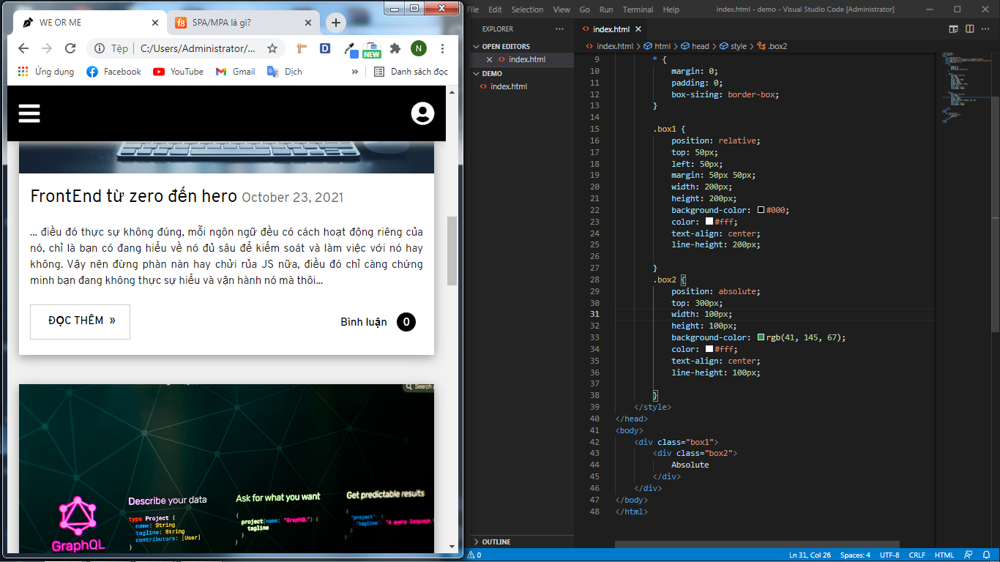
Đó các bạn thấy không, mình đã dùng fixed để cố định thanh menu ở trên cùng, cho dù các bạn có kéo xuống dưới nội dung nào đi nữa thì thanh menu của mình cũng sẽ ở đúng vị trí khung nhìn đó mà không hề bị trôi theo nội dung của trang
Cuối cùng là sticky, đây là một dạng position mới được thử nghiệm gần đây, tác dụng của nó cũng gần giống như fixed, khác một chút đó là fixed sẽ xét vị trí từ đầu để nó không thay đổi còn sticky sẽ cố định sau phần tử trượt đến vị trí cần xét cố định đó. Tuy nhiên mình không khuyến khích các bạn sử dụng sticky vì đây là dạng position đang trong giai đoạn thử nghiệm, không được nhiều các trình duyệt hỗ trợ
Như các bạn thấy trên đây, rất nhiều trình duyệt và phiên bản không hỗ trợ sticky hoặc chỉ hỗ trợ một phần, vì vậy mình khuyên các bạn không nên sử dụng thuộc tính này bây giờ, chúng ta cứ biết nó vậy thôi, đến khi nào nó phổ biến và được các trình duyệt chấp nhận thì hãng hay nhé.
Vừa rồi mình đã giúp các bạn hiểu kĩ càng về từng thuộc tính position, hãy cố gắng hiểu thật cặn kẽ để khi áp dụng chúng ta có thể làm việc với nó một cách tốt nhất, không bị nhầm lẫn, mơ hồ khái niệm và bản chất của nó nữa. Oke, chủ đề lần này cũng sẽ kết thúc tại đây, xin chào và hẹn gặp lại!!!
Mình chợt liên tưởng đến một vấn đề trong JS mà mình chắc chắn rằng rất nhiều bạn sẽ nhầm lẫn và chưa hiểu hết về nó. Khi làm việc với JS chúng ta phải tương tác với rất nhiều cấu trúc câu lệnh, một trong số đó là những câu lệnh kiểm tra điều kiện có kiểu trả về boolean. Kiểm tra điều kiện là một loại câu lệnh vô cùng quan trọng trong JS vì nó sẽ trực tiếp tương tác với các dữ liệu phía Client và cả Server để call API trả về dữ liệu người dùng (ví dụ như kiểm tra password, tên đăng nhập,...). Và hồi mới học JS mình cũng gặp 2 kiểu so sánh ba bằng === và hai bằng ==.
Thôi, bớt lan man, bài viết này mình sẽ đi vào tìm hiểu xem ba bằng và hai bằng khác nhau như thế nào? Và nên sử dụng kiểu so sánh nào?
Hay là
Vậy sự khác biệt là gì?
Đầu tiên, về 1 số thuật ngữ được Javascript định nghĩa thì như sau: Hai bằng (==) được gọi là toán tử so sánh trừu tượng, trong khi Ba bằng (===) được gọi là toán tử so sánh cân bằng nghiêm ngặt (Strict Mode). Sự khác biệt giữa chúng có thể được tổng kết như sau: Toán tử so sánh trừu tượng sẽ cố gắng giải quyết các kiểu dữ liệu thông qua việc chuyển đổi kiểu dữ liệu trước khi so sánh, còn toán tử so sánh nghiêm ngặt sẽ trả về false nếu các giá trị khác nhau. Cụ thể, chúng ta nhìn ví dụ dưới đây:
Nhìn vào ví dụ trên, thì toán tử hai bằng trả về đúng vì "3" là dạng chuỗi (String) được chuyển thành số 3 trước khi việc so sánh được thực hiện. Trong khi ba bằng cho thấy rằng đây là 2 kiểu dữ liệu khác nhau (Number khác String) nên trả về sai. Khá dễ hiểu phải không, một ví dụ khác nhé
Ta thấy, một lần nữa, việc so sánh trừu tượng đã thực hiện chuyển đổi kiểu dữ liệu. Cụ thể là kiểu Boolean True và chuỗi "1" được chuyển đổi thành số 1 và kết quả so sánh là đúng. Còn như bình thường thì so sánh nghiêm ngặt sẽ trả về sai (cần biết về khái niệm Truthy và Falsy để hiểu về ví dụ này). Nhìn vào 2 ví dụ đơn giản trên, thì chúng ta đã phần nào phân biệt được sự khác nhau giữa ba bằng và hai bằng. Tuy nhiên, trong thực tế có 1 vài trường hợp mà hành vi các toán tử này không trực quan cho lắm. Cùng mình xem xét 1 số ví dụ khác nhé:
Mình đã ghi lí do ở ngay bên cạnh để cho các bạn thấy được về những trường hợp cần ghi nhớ này. Tiếp theo, ví dụ dưới đây khá thú vị vì nó minh họa 1 chuỗi bình thường với các đối tượng chuỗi (string object). Chú ý chút nha.
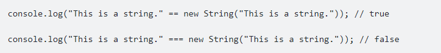 Và để biết tại sao việc sử dung ba bằng lại trả về sai, chúng ta console lên thử xem thế nào nhé
Ồ, hóa ra kiểu dữ liệu của toán tử new là Object, đó chính là lí do vì sao ba bằng lại trả về false, điều mà nhìn qua rất nhiều người nghĩ rằng đó là true. Và bạn sẽ nhận được kết quả tương tự khi so sánh các số nguyên thủy và các phép toán luận với các hàm bao quanh tương ứng.
Vậy chúng ta nên sử dụng cái nào?
Lời khuyên từ các chuyên gia thì chúng ta nên sử dụng toán tử ba bằng, vì theo như những giải thích ở trên thì sử dụng so sánh nghiêm ngặt sẽ làm tăng sự rõ ràng của code của bạn (nhiều lúc không phải vắt óc suy nghĩ hay cố gắng ghi nhớ các quy tắc chuyển đổi kiểu dữ liệu lằng nhằng) và giúp ngăn chặn những sai sót phát sinh từ việc sử dụng so sánh trừu tượng. Nói có sách, mách có chứng, mình xin phép trích lời Nicholas Zakas tác giả cuốn sách JavaScript for Web Developers như sau (mình xin phép để nguyên bản tiếng Anh để bảo vệ tính nguyên vẹn :man_detective_tone1:) "This helps to maintain data type integrity throughout your code."
Còn để tốt hơn nữa, khi bạn cần so sánh các giá trị của các loại khác nhau, hãy tự chuyển đổi đưa về cùng kiểu dữ liệu, rồi so sánh. Tuy nhiên, nếu bạn thực sự nắm được vấn đề cốt lõi của 2 loại toán tử này thì việc sử dụng hai bằng hay ba bằng sẽ không còn là vấn đề cần lo lắng nữa! Giống như là dù 5 chuông báo thức hay 1 chuông thì cuối cùng điều quan trọng bạn vẫn phải đến công ty đúng giờ mà thôi.
Bonus
Nếu để ý, khi sử dụng toán tử hai bằng, thì toán tử này sẽ cố gắng chuyển đổi kiểu của toán hạng nếu như 2 toán hạng có kiểu khác nhau rồi mới so sánh. Vậy nếu khác nhau thì toán tử nào sẽ lấy làm gốc để thằng kia chuyển đổi về, hay cả 2 cùng về 1 kiểu trung gian? Trình duyệt sẽ giúp các bạn việc chuyển đổi này phải không?. Thực ra, sự chuyển đổi này khá phức tạp, phạm vi bài viết này mình sẽ khó có thể giải thích hết được, nên để có 1 cái nhìn chi tiết hơn mời các bạn có thể tìm hiểu chi tiết hơn tại ECMAScript Language Specification. Trên đây mình đã làm rõ cho các bạn về 2 loại toán tử so sánh mà mọi người va chạm rất nhiều khi lập trình, mong rằng sẽ giúp các bạn hiểu rõ, đơn giản hóa được vấn đề và không gặp phải những trường hợp trớ trêu khi thấy JS hoạt động không như mình nghĩ nữa nhé!
Quay trở lại với chủ đề của ngày hôm nay nhé. Nhẹ nhàng thôi nhưng mình nghĩ cũng khá quan trọng mà chúng ta cần biết. Hai khái niệm chúng ta tương tác khá thường xuyên trong khi CSS đó là Pseudo-elements và Pseudo-classes. Mình cùng vào luôn vấn đề nhé.
Cả 2 khái niệm mình đề cập đến đầu tiêu đề nó thuộc về pseudo-selectors dịch nôm na ra là “bộ chọn giả” tức là các selectors này là trạng thái hoặc thuộc tính của selector đã được quy định trước
Pseudo-classes là một lớp giả CSS là một từ khóa được thêm vào phía cuối của selector và đứng sau một dấu (:), nó được dùng để chỉ rõ bạn muốn định dạng cho phần tử được chọn nhưng chỉ khi nó ở trong một trạng thái nhất định. Ví dụ, bạn muốn định dạng một liên kết chỉ khi nó được hover hoặc một checkbox khi nó bị disabled hoặc một phần tử là con thứ nhất của cha trong cây DOM.
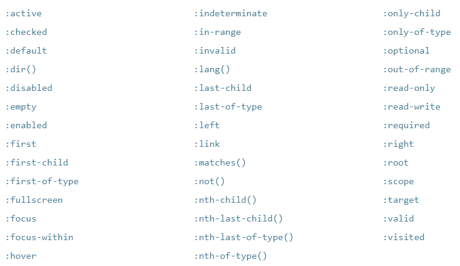
Trên đây là các từ khóa được định nghĩa trong CSS nó quy định trạng thái của một selector tương ứng.
Pseudo-elements là phần tử giả cũng rất giống với lớp giả CSS nhưng chúng có một số điểm khác nhau. Phần tử giả đứng sau hai dấu (::) . Từ khóa thể hiện phần tử giả được thêm vào cuối của selector để chỉ định một phần nhất định của một phần tử.
Nó cho phép bạn thêm một kí tự nội dung ở trước hoặc sau phần tử được chọn và style trực tiếp cho nó mà không cần phải viết HTML một phần tử cụ thể thực sự. Nội dung chỉ là cách gọi chung, thực tế các bạn có thể biến nó thành vô vàn thể loại khác nhau như hình khối,...
OK vậy là mình vừa giúp các bạn có cái nhìn tổng quan và rõ ràng hơn về Pseudo-elements và Pseudo-classes rồi đúng không nào. Tổng hợp lại chút nhé. Tóm lại, Pseudo-classes được sử dụng để định nghĩa một trạng thái đặc biệt nào đó của một phần tử được chọn. Pseudo-elements có thể hiểu là phần tử giả, được sử dụng để tạo một số style đặc biệt của element được chọn. Mình nghĩ như vậy là khá dễ hiểu rồi, các bạn đừng chủ quan nhé, nó không hề khó nhưng rất dễ nhầm và quên, nhất là khi đây là kiến thức mà những nhà tuyển dụng có thể hỏi các bạn. Bài viết lần này dừng lại tại đây nhé, chúc các bạn học tập thật tốt!!!
Kiểu dữ liệu là gì?
Kiểu dữ liệu (data type hoặc chúng ta có thể gọi đơn giản là type) là một cách để phân loại dữ liệu cho trình biên dịch hiểu các lập trình viên muốn sử dụng loại dữ liệu nào. JavaScript cho phép chúng ta làm việc với các kiểu dữ liệu nguyên thủy (string, number,…) và kiểu dữ liệu không nguyên thủy.
Kiểu dữ liệu nguyên thủy:
String là kiểu dữ liệu chứa dữ liệu dưới dạng text. Kiểu string trong JavaScript cho phép bạn sử dụng cả ngoặc đơn và ngoặc kép để biểu diễn nó.
Một số ký tự đặc biệt trong string:
Kiểu dữ liệu Number
Kiểu dữ liệu number trong JavaScript có thể xem là kiểu tổng hợp của int, float, double, … trong các ngôn ngữ lập trình khác. Hiểu đơn giản number là kiểu dữ liệu số, số nguyên, số thực,… đều là kiểu số cả. Cùng nhìn ví dụ của mình nhé.
Ở trên là các biến number1 là số nguyên, number2 là số thực.
Ta có thể thực hiện number1 + number2 bởi vì nó đều là kiểu number, không phân biệt là số, số thực, số nguyên gì cả, có thể thực hiện tất cả các phép toán.
Lưu ý: Trong kiểu Number này các bạn cần lưu ý hai giá trị đặc biệt:
Kiểu dữ liệu Boolean
Trong JavaScript, các kiểu dữ liệu thuộc kiểu dữ liệu boolean chỉ có thể nhận một trong hai giá trị, đó là:
Để kiểm chứng, chúng ta hiển thị giá trị của các biến này ra xem sao nhé:
Đó chúng ta có thể thấy 2 cách nhận giá trị đều cho ra những kết quả của kiểu boolean. Kiểu dữ liệu boolean thường được sử dụng trong các câu lệnh rẽ nhánh.
Kiểu dữ liệu undefined
Trong JavaScript, khi một biến được khai báo mà không gắn với bất kỳ giá trị nào thì biến đó gọi là kiểu dữ liệu undefined, giá trị cũng là undefined luôn.
Kiểu dữ liệu Null Trong JavaScript hỗ trợ kiểu dữ liệu null, có nghĩa là không có gì, bạn chỉ cần khai báo biến bằng null là có thể sử dụng kiểu này.
Đơn giản phải không nào? Nhưng khoan, vấn đề này mới làm đau đầu bao nhiêu chuyên gia lập trình đây này.
Và ...
Không có gì nhưng khi in ra kết quả lại vẫn là null, kiểu dữ liệu là null nhưng khi type of thì lại là object. Thật sự kì lạ đúng không nào. Với những người lập trình mà không phải nhà phát triển ngôn ngữ, bạn chỉ cần hiểu nó như vậy là được rồi, nhiều lập trình viên cũng chấp nhận nó như là một lỗi ngôn ngữ vậy. Chú ý giúp mình điều này nhé, không nhiều người để ý đến nó đâu.
Phân biệt kiểu undefined và kiểu null như thế nào?
Nhiều bạn sẽ nhầm lẫn giữa hai kiểu dữ liệu này. Các bạn nghĩ hai kiểu này đều nói về một biến không xác định đúng không nào?
Nó không hẳn là vậy.
Toán tử trong JavaScript
JavaScript có các loại toán tử sau:
Toán tử gán được dùng để gán giá trị ở bên phải toán tử vào biến ở bên trái toán tử.
Trong JavaScript, có các toán tử gán sau:
Ví dụ nhé:
Các toán tử số học trong JavaScript
Các toán tử số học (toán tử đại số) này thực hiện trên các số - dữ liệu dạng số (cụ thể hoặc là biến). Chúng cũng gần tương tự như trong toán học nên không quá khó hiểu đâu.
Ví dụ nào:
Ví dụ về chia lấy dư nhé:
Chý ý phép toán ++ và -- (toán tử đơn phương): Khi viết biểu thức thì toán tử có thể ở bên trái hoặc bên phải biến cần tăng hoặc giảm, kết quả sẽ khác nhau tùy cách viết đấy nhé.
Khi đặt toán tử ++ ở phía bên trái biến thì nó sẽ như này:
Tương tự với toán tử --
Các toán tử so sánh trong JavaScript
Toán tử so sánh trong JavaScript sử dụng trong các biểu thức về logic để so sánh bằng, khác nhau, lớn hơn, nhỏ hơn.... Nó sẽ trả về giá trị true hoặc false, chỉ 2 giá trị này thôi.
Ví dụ:
Các toán tử logic trong JavaScript
JavaScript cung cấp 3 loại toán tử logic gồm các phép toán: and, or, not
Cùng mình ví dụ nào:
Toán tử ternary trong JavaScript
Toán tử Ternary (toán tử 3 ngôi / toán tử điều kiện) trong JavaScript là một cách viết tắt của câu điều kiện if ... else đó các bạn.
Cú pháp:
Trong đó:
Nối chuỗi với toán tử +
Trong JavaScript, chúng ta có thể sử dụng toán tử + để nối hai chuỗi lại với nhau. Nó có thể nối cả số vào chuỗi. Ví dụ nhé:

Toán tử typeof trong JavaScript
Toán tử typeof trả về một chuỗi ký tự thể hiện kiểu dữ liệu của toán hạng. Các bạn có thể truyền vào chuỗi ký tự, biến, từ khóa, hoặc object để kiểm tra kiểu của nó.
Không bắt buộc thêm dấu ngoặc tròn đâu nhé.
Ví d tiếp nào:
Vậy là mình vừa cùng các bạn tìm hiểu về các loại toán tử trong JavaScript, những toán tử này rất hữu dụng khi chúng ta lập trình. Hãy xem thật kỹ và luyện tập để hiểu hơn nhé. Hẹn gặp các bạn ở bài viết tiếp theo.
Biến là một khái niệm quan trọng trong JS. Trước đây học về biến khá đơn giản vì chúng ta chỉ khai báo biến với var. Nhưng sau khi phiên bản JS ES6 ra đời ta đã có thêm những khái niệm, những cách khác để khai báo biến. Điều đó làm cho biến có nhiều công năng mới hơn, đa dạng hơn nhưng cũng đòi hỏi chúng ta phải hiểu hơn về nó. Ngay bây giờ chúng ta cùng đi tìm hiểu nhé.
Khai báo biến với từ khóa var và let
Biến dùng để lưu trữ giá trị các dữ liệu, hay các đối tượng. Giá trị của biến tùy bạn thay đổi trong quá trình chương trình làm việc để đáp ứng yêu cầu riêng của các bạn. Trong JavaScript có hai kiểu khai báo biến là let và var.
Cú pháp khai báo biến trong JavaScript bằng từ khóa var:
Trong đó:
Trong đó:
Đối với biến khai báo bằng từ khóa var:
Đối với biến khai báo bằng từ khóa let:
Các bạn chú ý giúp mình phần này nhé, khai báo bằng let và var khác nhau:

Phạm vi của biến là gì?
Trong lập trình nói chung và lập trình JavaScript nói riêng, bạn sẽ thường nghe thấy khái niệm "Cục bộ" và "Toàn cục". Tên như ý nghĩa của nó, cục bộ có nghĩa là một phạm vi nhỏ còn toàn cục thì có nghĩa là ảnh hưởng đến toàn bộ.
Đặt tên biến là một việc cực kỳ quan trọng trong lập trình, đặt tên biến tốt sẽ giúp chương trình của bạn không bị lỗi, khả năng đọc tốt, dễ dàng duy trì và phát triển sau này.
Quy tắc, cách đặt tên biến trong JS:
Hằng số trong JavaScript
Hằng số được khai báo phải khởi tạo ngay với từ khóa const, sau khi khai báo và gán thì giá trị sẽ không được thay đổi nữa. Từ khóa const là trường hợp đặc biệt của biến. Cú pháp:
Tips: Thông thường, hằng số sẽ được đặt tên bằng chữ viết HOA để phân biệt với các biến khác (Không bắt buộc).
Như vậy, qua bài học này mình đã giới thiệu các bạn về biến trong JavaScript, cách khai báo biến, gán giá trị cho biến cũng như cách đặt tên biến đúng quy tắc.... Các bạn hãy xem lại bài học thật kĩ và cố gắn thực hành lại nhé. HỌC LẬP TRÌNH là một quá trình rèn luyện gian khổ, thành công hay không hầu hết phụ thuộc vào việc luyện tập. Càng luyện tập thật nhiều càng có tỷ lệ thành công cao. Kể cả những thứ khó hiểu, cứ làm đi làm lại nhiều sẽ hiểu. Hẹn gặp lại các bạn trong những bài học tiếp theo.

Thao tác với chuỗi trong JavaScript là một kĩ năng cực kì quan trọng nên các bạn hãy thật chú ý nhé!!!
Nối chuỗi trong JavaScript
Để cho code đọc dễ hiểu, các lập trình viên thường tránh việc code quá dài 80 ký tự trên một dòng. Nếu một câu lệnh JavaScript thì bạn có thể xuống dòng, trình biên dịch sẽ bỏ qua điều này.
Nhưng nếu chuỗi dài quá không thể viết trên một dòng thì sao? Cách xử lý là chúng ta sẽ xuống dòng và dùng ký tự nối chuỗi, cùng xem ví dụ của mình nhé:
Ngoài ra, bạn cũng có thể sử dụng dấu \ để cho trình biên dịch biết là bạn muốn xuống dòng trong Javascript.
Còn về phương pháp nối chuỗi cơ bản thì các bạn cũng đã được học ở bài toán tử trong JavaScript của mình rồi đúng không nào.
Ép kiểu chuỗi trong JS
Nếu bạn muốn ép kiểu một giá trị của một biến nào đó sang kiểu chuỗi thì có thể sử dụng cú pháp sau:
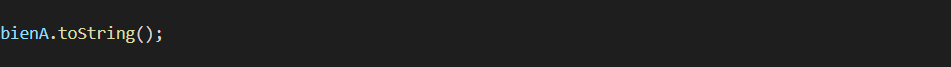
Ví dụ ép kiểu chuỗi trong JS:
Ngoài cách trên thì bạn có thể sử dụng đối tượng String để tạo chuỗi (mình sẽ nói rõ hơn ở bài Object) nên trước nó phải có từ khóa new đặt ở trước. Nó sẽ trông như thế này các bạn ạ:
Các phương thức thao tác với chuỗi trong JS Đây chính là phần mình sẽ chia ra để giới thiệu cho các bạn, phương thức thao tác rất quan trọng và chúng ta sẽ phải làm việc với nó thường xuyên. Trong phần 1 này mình sẽ giới thiệu vài thao tác cơ bản trước nhé.
Đếm độ dài của chuỗi trong JS
Ta sử dụng thuộc tính length để trả về độ dài của một chuỗi trong JavaScript:
Tìm kiếm một chuỗi trong chuỗi
Phương thức indexOf() trả về chỉ mục (vị trí) của chuỗi trùng khớp được tìm thấy đầu tiên:
JavaScript sẽ đếm vị trí từ số 0 (Giống như các ngôn ngữ lập trình khác), như hình minh họa dưới đây:
Cả hai phương thức này sẽ tả về -1 nếu không tìm thấy chuỗi cần tìm trong chuỗi gốc. Cả hai phương thức đều chấp nhận tham số thứ 2 để bạn có thể tùy chọn tìm kiếm.
Phương thức indexOf() sẽ tìm kiếm từ tham số thứ 2 đến hết chuỗi:
Phương thức lastIndexOf() sẽ tìm kiếm từ 0 đến tham số thứ 2 mà bạn truyền vào:
Tuy nhiên, trong một số trường hợp indexOf() và lastIndexOf() lại không có ưu thế, như là tìm kiếm với biểu thức chính quy (ReExp). Chính vì thế, chúng ta có phương thức search()
Còn về tìm kiếm thông thường thì phương thức search() vẫn có thể làm tốt tương tự indexOf hoặc lastIndexOf. Chỉ có điều là phương thức search() không chấp nhận đối số thứ 2 làm vị trí bắt đầu tìm kiếm (Có thể truyền vào, không lỗi biên dịch nhưng không có tác dụng)
Vậy là vừa rồi mình đã giới thiệu cho các bạn 2 thao tác đầu tiên khi làm việc với String. Khá hay ho đúng không nào. Các bạn hãy đọc lại thật kĩ và cùng thực hành lại nhé. Bài học ngày hôm nay sẽ tạm dừng tại đây. Chúng ta sẽ cùng nhau học tiếp những thao tác tiếp theo trong những bài học của phần sau. Xin chào!!!.
Cắt ra một chuỗi với slice()
Phương thức slice() sẽ cắt một chuỗi con trong một chuỗi trả về chuỗi con đó trong một chuỗi mới. Phương thức này cần 2 tham số: (vị trí) chỉ số bắt đầu và (vị trí) chỉ số kết thúc.
Ví dụ, cắt ra một chuỗi từ vị trí thứ 7 đến 10 (không bao gồm ký tự ở vị trí thứ 10):
Kết quả:
Phương thức này cũng chấp nhận số âm, vị trí sẽ được đếm từ phía cuối chuỗi. Ví dụ nhé:
Cắt ra một chuỗi với substring()
Phương thức substring() cũng thực hiện cắt chuỗi tương tự như slice(). Điều khác là substring() sẽ không nhận vào chỉ số âm. Nếu bạn cố tình truyền vào chỉ số âm substring() sẽ không trả về kết quả như bạn mong muốn.
Cắt ra một chuỗi với substr()
Phương thức substr() cũng tương tự như slice() là dùng để cắt ra một chuỗi mới từ chuỗi đã cho. Điểm khác của substr() là chỉ số thứ hai quy định độ dài của phần được trích xuất (không phải là vị trí kết thúc như slice())
Còn nếu ta bỏ qua tham số thứ hai thì nó sẽ cắt đến hết chuỗi:
Thay thế một chuỗi với replace()
Phương thức replace() thay thế một giá trị được chỉ định bằng một giá trị khác trong một chuỗi:
Khi đó chuỗi cachBiGaiTan sẽ có giá trị là: Có BMW. Mặc định thì hàm replace() chỉ thay thế giá trị chỉ định được tìm thấy đầu tiên. Và hàm này cũng phân biệt chuỗi viết hoa và viết thường. Có nghĩa là, bạn phải truyền chuỗi cần thay thế chính xác 100% nếu muốn thay thế đúng.
Khá là vui đúng không nào ^^. Mình muốn tạo ra một chút thoải mái cho không khí học tập bớt căng thẳng chút thôi, mấy anh em đừng bi quan nhé. Tiếp tục đến thao tác tiếp theo nào.
Chuyển đổi chuỗi HOA - thường
Một thực tiễn tốt trong khi thiết kế các chức năng lấy dữ liệu từ người dùng, nếu bạn muốn chuỗi này khi hiển thị ra là chữ HOA. Thì tốt nhất, luôn thực hiện chuyển đổi nó thành chữ viết HOA qua phương thức toUpperCase() (Chứ đừng yêu cầu người dùng nhập chữ viết HOA)
Ngược lại, bạn cũng có thể chuyển đổi tất cả chuỗi thành chữ viết thường với phương thức toLowerCase()
Okay, mình nghĩ sẽ dừng tại đây để cho các bạn có thời gian thực hành cũng như xem lại thật kĩ những thao tác mới học của bài ngày hôm nay. Có một số thao tác khá dễ nhầm lẫn nếu ta không chú ý để phân biệt nó thật chính xác. Nhắc lại một lần nữa, hãy xem lại thật kĩ càng và thực hành để nhớ và hiểu hơn về cách hoạt động của từng thao tác nhé. Bài hôm nay sẽ tạm dừng tại đây, hẹn gặp các bạn ở phần 3 cũng là phần cuối cùng trong series bài học thao tác với String nhé.!!!

Trong 2 phần trước mình đã giới thiệu cho các bạn kha khá những thao tác của String rồi, đến với phần cuối cùng sẽ là những thao tác khó hơn, quan trọng hơn và cũng được sử dụng rất thường xuyên khi làm việc. Hãy tập trung để cùng vào bài học ngay nhé.
Nối chuỗi với phương thức concat()
Phương thức concat() trong JavaScript này kết hợp hay hay nhiều chuỗi với nhau. Có thể hiểu là cộng chuỗi tương tự như sử dụng toán tử +.
Phương thức concat() này lấy các tham số được truyền vào nối vào sau chuỗi hoVaTenDem và trả về kết quả. Tuy nhiên, nó không làm thay đổi hoVaTenDem, lúc này, thử kiểm tra lại giá trị của hoVaTenDem xem sao nhé:
Cách của phương thức concat() tương đương với:
Loại bỏ khoảng trắng ở đầu và cuỗi chuỗi với phương thức trim()
Khi lấy dữ liệu từ người dùng, bởi vì người dùng thường sẽ nhập thừa dấu cách (space) ở đầu và cuối chuỗi... Do đó, chúng ta cần phải loại bỏ nó trước khi sử dụng. Phương thức trim() này loại bỏ những khoảng trắng thừa ở cả hai đầu của chuỗi theo cách như sau:
Lấy ký tự ở vị trí chỉ định bằng charAt()
Phương thức charAt() này thì đơn giản là sẽ trả về một ký tự nằm ở vị trí chỉ định. Ví dụ nhé:
Lấy mã ký tự ở vị trí được chỉ định
Phương thức charCodeAt() này khác ở phương thức chartAt() ở chỗi là nó sẽ trả về mã unicode của một ký tự nằm ở vị trí chỉ định trong chuỗi chớ không phải là một ký tự. Phương thức trả về mã UTF-16 dưới dạng một số nguyên trong khoảng từ 0 -> 65535.
Truy cập chuỗi như một mảng
Trong phiên bản ECMAScript 5 (phiên bản 2009), JavaScript đã cho phép truy cập chuỗi tương tự cách truy cập mảng. Chúng ta sẽ sử dụng ký hiệu []
Một số lưu ý:
Nếu bạn muốn thao tác chuỗi như mảng thực thụ thì bạn có thể chuyển chuỗi thành mảng bằng phương thức split():
Lưu ý: Mảng là một đối tượng đặc biệt nên kiểu của nó sẽ là object.
Để nhìn rõ kiểu của nó bạn có thể sử dụng console.log() để log mangHoaQua ra màn hình console:
Kết quả ta được:
Vậy là mình vừa cùng các bạn học một số cách thao tác với chuỗi trong JavaScript, các bạn sẽ làm việc với chuỗi rất nhiều nên hãy cố gắng luyện tập. Trực tiếp làm lại các ví dụ nhiều lần, biến đổi đi đôi chút để xem kết quả thay đổi thế nào, thay đổi như thế nào thì lỗi? thay đổi thế nào thì không lỗi? thay đổi thế nào để có kết quả đúng mong đợi? ... Đây luôn là cách học mà mình áp dụng khi học bất cứ một kiến thức nào. Chỉ có như thế bạn mới hiểu thật rõ kỹ thuật thao tác với chuỗi trong JavaScript. Hẹn gặp lại bạn ở bài học JavaScript tiếp theo.

Number là gì?
Trong JavaScript có hai giá trị lưu trữ trong Number đó là số có dấu phảy động và số nguyên. Ví dụ:
Nếu số quá lớn hoặc quá nhỏ thì bạn có thể sử dụng số mũ để biểu diễn:
Đối với JavaScript các số luôn là 64 bit.
Trong nhiều ngôn ngữ khác có các kiểu dữ liệu số như integer, short, long,…. Nhưng trong JavaScript chỉ có khái niệm Number mà thôi. Ngoài ra bạn có thể biểu diễn giá trị của Number ở dạng nhị phân, thập phân, thập lục phân, …. Ví dụ:
Trong JavaScript tất cả các dữ liệu liên quan đến những con số đều có dữ liệu là number. Để chứng minh, bạn dùng hàm typeof sẽ thấy kết quả trả về đều là number.
Xử lý dữ liệu Number
Chúng ta sẽ tìm hiểu một số cách xử lý liên quan đến đối tượng Number và mình sẽ lưu ý một số vấn đề khi sử dụng.
Chuyển số sang chuỗi (number to string)
Để chuyển một biến ở kiểu Number sang kiểu String thì ta sử dụng phương thức soCanChuyenDoi.toString(type). Hàm này có một tham số truyền vào là type và đây chính là kiểu mà bạn muốn chuyển, mặc định sẽ là hệ thập phân (hệ 10).
Các hệ số thường sử dụng :
Số vô cực (infinity)
Số vô cực là một kiểu Number và khi một biến có giá trị Infinity thì tức là nó đã vượt qua mức lưu trữ cho pehespneen theo mặc định nó sẽ chuyển về dạng infinity. Vì nó cũng là một giá trị nên bạn có thể so sánh như các Number khác. Một số cách để tạo ra số infinity:
Không phải số (NaN – Not a Number)
Nếu bạn thực hiện một phép toán mà liên quan đến Number nhưng nó vi phạm các quy tắc tính toán thì kết quả sẽ trả về NaN. Ví dụ khi bạn thực hiện phép nhân số số cho một chuỗi thì kết quả sẽ là NaN
Tuy nhiên: Nếu là một chuỗi Number thì kết quả sẽ thực thi được.

Để kiểm tra một biến có phải là NaN không thì chúng ta sử dụng hàm isNaN(). Cú pháp:
Trong đó: soCanKiemTra là tham số cần kiểm tra. Ví dụ:
Tạo một Object Numbers
Tạo biến kiểu thông thường thì mình làm hằng ngày, quá đơn giản rồi đúng không nào. JavaScript là ngôn ngữ cũng được coi là hướng đối tượng nên Number cũng là một đối tượng mà đối tượng thì mình sẽ tạo biến theo kiểu đối tượng. Nhưng sẽ khác một chút cách thông thường:
Làm tròn số
JavaScript cung cấp phương thức làm tròn số là toFixed() có tác dụng làm tròn số đến n phần tử sau dấu. Cú pháp:
Trong đó:

Ngoài ra bạn cũng có thể sử dụng các phương thức làm tròn số của đối tượng Math trong JavaScript như:
Hàm toPrecision thì có tác dụng chuyển đổi một số về số có độ dài xác định. Cú pháp:
Trong đó:
Hàm Number()
Hàm Number() có tác dụng chuyển đổi tất các các kiểu dữ liệu sang kiểu số, nếu như có trường hợp nào vi phạm quy tắc tính toán thì nó sẽ chuyển thành NaN. Cú pháp:
Trong đó: X: là số mà chúng ta muốn chuyển đổi.
Ví dụ:
Hàm parseInt()
Hàm parseInt() trong JavaScript có tác dụng chuyển một chuỗi sang dạng số nguyên. Nhưng chuỗi có ký tự đầu khác số thì nó sẽ không chuyển được, còn ký tự đầu tiên là số nguyên thì chuyển được. Cú pháp:
Trong đó: x là thành phần mà bạn cần chuyển thành số nguyên.
Ví dụ:
Hàm parseFloat()
Hàm parseFloat() có tác dụng chuyển đổi chuỗi về dạng số thực. Nó tương tự như parseInt(), nếu chỗi có ký tự đầu tiên không phải là số thì không chuyển được. Cú pháp:
Trong đó: x là thành phần cần chuyển thành số thực.
Ví dụ:
Trên đây là kha khá những hàm xử lí với kiểu dữ liệu Number trong JS mà mình đã mang đến cho các bạn. Hi vọng rằng các bạn sẽ học nó thật hiệu quả và áp dụng vào những bài toán một cách hữu ích nhất. Trong bài tới mình sẽ gửi đến các bạn những xử lí đối với kiểu dữ liệu boolean. Bài học ngày hôm nay sẽ kết thúc tại đây. Chúc các bạn một ngày tốt lành. !!!
Boolean trong JavaScript
Trong JavaScript hay bất kỳ ngôn ngữ lập trình nào khác boolean là kiểu dữ liệu logic, nó có hai giá trị true và false. Và Boolean là đối tượng đại diện cho kiểu dữ liệu boolean, nó cũng bao gồm thêm cả các thuộc tính và phương thức khác.
Tạo đối tượng boolean mới
Đây là cú pháp tạo ra một đối tượng mới từ đối tượng Boolean trong JavaScript.
Trong đó:
Hàm toSource() sẽ trả về chuỗi chứa nguồn đối tượng của boolean. Bạn có thể sử dụng chuỗi này để tạo một đối tượng tương đương. Cú pháp:
Hàm toString()
Hàm toString() trả về một chuỗi có giá trị: “true” hoặc “false” phụ thuộc vào giá trị của đối tượng. Cú pháp:
Ví dụ:
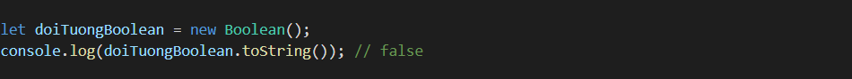
Hàm valueOf()
Hàm valueOf() sẽ trả về giá trị ban đầu của đối tượng. Cú pháp:
Ví dụ:
Bài học hôm nay chỉ có vậy thôi các bạn, khá đơn giản đúng không nào. Cũng một phần đó là boolean cũng đã được mình giới thiệu những cách hoạt động trong một số bài học khác. Mong rằng các bạn đã có thể thu nhận được kha khá chắc những kiến thức làm việc với những kiểu dữ liệu nguyên thủy như String, Number, Boolean mà mình đã đề cập ở những bài học gần đây. Từ bài sau chúng ta sẽ đến với những kiểu dữ liệu khó hơn, phức tạp hơn và đòi hỏi khả năng tư duy lập trình sâu hơn. Hãy ôn lại thật kĩ một lần nữa về kiểu dữ liệu nguyên thủy để có một base thật chắc trước khi chuyển sang những kiểu dữ liệu khó hơn. Hẹn gặp lại các bạn trong những bài học tiếp theo!!!

Mảng trong JavaScript là gì?
Mảng là một kiểu dữ liệu đặc biệt, có thể chứa nhiều hơn một giá trị vào một thời điểm. Khi chưa biết đến mảng, nếu bạn có một danh mục sản phẩm (ví dụ như sách họ tên sinh viên), bạn có thể lưu trữ lại trong một danh sách đơn như này:
Lưu trữ vậy thì cũng được đó, nhưng mà danh sách là 1.000, hay 100.000 sinh viên thì sao? Chẳng lẽ ngồi gõ từng biến SV_1, SV_2, SV_3.... SV_100000 ? Không, chúng ta sẽ không làm như thế. Lập trình sinh ra để tối ưu hóa các công việc lặp đi lặp lại cơ mà. Giải pháp ở đây là sử dụng đến mảng, ví dụ như thế này:
Với mảng, bạn không tạo từng biến như trên nữa, vừa tiết kiệm bộ nhớ lại có thể truy cập đến bất cứ phần tử nào trong mảng một cách nhanh chóng. Mảng có thể lưu trữ nhiều giá trị trong một biến duy nhất bạn có thể truy cập gái trị đó bằng cách liên kết với chỉ số (index).
Cách khai báo, khởi tạo mảng trong JS
Có 3 cách tạo mảng trong JavaScript:
Cú pháp:
Truy cập vào giá trị của mảng:
Lưu ý: Mảng đếm từ 0 nên phần tử đầu tiên của mảng có index là 0.
Do đó, trong ví dụ trên mình đã tạo ra mảng có tên là sinhVien và truy xuất giá trị của phần tử của mảng sinhVien. sinhVien[0] chính là phần tử đầu tiên của mảng có giá trị là: Trần Văn A
Khai báo mảng rồi sau đó khởi tạo dữ liệu
Cú pháp:
Khai báo mảng bằng đối tượng Array()
Cú pháp:
Ví dụ:
Khai báo một mảng có tên là sinhVien thông qua đối tượng Array:
Khai báo và khởi tạo dữ liệu ban đầu luôn:
Và chúng ta cũng có thể làm như thế này:
Lưu ý: Bạn nên tránh sử dụng từ khóa new để khai báo mảng. Hay nói cách khác là không sử dụng hàm tạo Array() để khai báo mảng trong JavaScript.
Hàm xử lý mảng trong JavaScript thông dụng
Như các bạn đã biết, mảng là một kiểu dữ liệu rất nhiều hữu ích, có rất nhiều việc cần dùng đến. Vì thế, JavaScript cung cấp sẵn một số hàm xử lý mảng giúp giảm thời gian làm việc.
Bên dưới đây là một số hàm xử lý mảng thông dụng nhất. Hãy cùng học và luyện tập sử dụng chúng nhé.
Thuộc tính length: Tính số phần tử trong mảng
Đây không được coi là một hàm nhưng nó cực kỳ quan trọng. Do đó mình sẽ giới thiệu đầu tiên. Thực tế, length là thuộc tính trong mảng, nó trả về số lượng phần tử đang có trong mảng. Cách thực hiện như trong ví dụ sau:
Bạn cũng có thể đặt nó vào trong một hàm khác, như thế này:
Hàm join(): Gộp tất cả các phần tử trong mảng
Hàm join() trong JavaScript có tác dụng gộp tất cả các phần tử trong mảng thành một chuỗi. Có thể hiểu hàm này ngược lại với hàm split() trong String.
Chúng ta có một mảng:
Ta thực hiện gộp các phần tử thành một chuỗi như sau:
Theo mặc định, các phần tử sẽ được phân tách bởi dấu phảy, Bởi vì phần tử cuối cùng là một rỗng nên chúng ta vẫn có dấu phân tách ở cuối như kết quả trên. Tuy nhiên, bạn cũng có thể sửa đổi nó bằng cách truyền dấu phân tách vào hàm join() như sau:
Vừa rồi mình đã giới thiệu cho các bạn khái niệm, cách khai báo mảnh trong JavaScript rồi. Thêm vào đó là 2 thuộc tính, hàm dùng để làm việc với mảng. Trong phần tiếp theo, mình sẽ giới thiệu những thuộc tính và phương thức còn lại của Mảng. Bài học lần này sẽ kết thúc tại đây, chúc các bạn học tập thật hiệu quả.
Hàm pop(): Loại bỏ phần tử ở cuối mảng
Hàm pop() trong JavaScript loại bỏ phần tử ở cuối màng và đồng thời trả về phần tử vừa bị loại bỏ đó. Ví dụ:
Bây giờ ta sử dụng hàm pop() với kỳ vọng là xóa đi phần tử cuối cùng trong mảng sinhVien:
Kết quả ta được:
Như đã nói ở trên, hàm pop() sẽ trả về phần tử vừa bị loại bỏ. Do đó, ta thử kiểm tra xem thế nào nhé:
Hàm push(): Thêm phần tử vào cuối mảng
Hàm push() trong JavaScript được sử dụng để thêm phần tử vào cuối mảng, sau khi thay đổi mảng nó sẽ trả về độ dài mới của mảng. Cú pháp:
Trong đó:
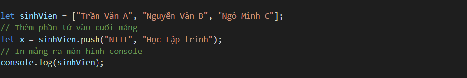
Kết quả ta được:
Ok, như đã nói, sau khi thêm danh sách các phần tử vào cuối mảng thì hàm push() sẽ trả về độ dài mới của mảng. Bây giờ chúng ta thử xem biến x có giá trị gì nhé.
Hàm shift(): Xóa phần tử đầu mảng
Ngược lại với pop(), hàm shift() trong JavaScript sẽ xóa phần tử đầu mảng, đồng thời trả về phần tử vừa bị loại bỏ đó. Ví dụ:
Kết quả:
Bây giờ, thử kiểm tra xem biến x có đang chứa phần tử vừa bị loại bỏ không nhé:
Hàm unshift() thêm một hoặc nhiều phần tử vào đầu mảng
Cú pháp hàm unshift():
Trong đó:
Kết quả:
Gần tương tự như hàm push(), hàm unshift() sau khi thêm phần tử vào đầu mảng, nó cũng sẽ trả về độ dài mới của mảng.
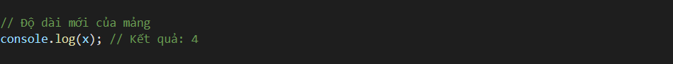
Okay, vừa rồi mình đã giới thiệu đến các bạn thêm những hàm dùng để thao tác với mảng cũng như dữ liệu của nó. Hãy thực hành thật nhiều để có thể nắm cũng cú phép cũng như hiểu cách hoạt động và giá trị trả về của từng hàm nhé. Phần 2 sẽ kết thúc tại đây và mình sẽ hẹn các bạn ở phần cuối cùng trong series về mảng ở bài tiếp theo nhé!!!
Hàm splice(): Chèn phần tử vào vị trí chỉ định
Chúng ta đã biết thêm phần tử vào đầu và cuối mảng. Câu hỏi đặt ra là có thể thêm phần tử vào giữa mảng, ở vị trí chỉ định được không? Câu trả lời là hoàn toàn được với hàm splice(). Cú pháp hàm splice() như sau:
Trong đó:
Kết quả nhận được là:
Như các bạn thấy đó, hàm splice() ở trên thêm 2 phần tử vào từ vị trí thứ 1 và đẩy các phần tử ra sau (Vì chúng ta truyền tham số thứ 2 là 0 nên không xóa đi phần tử nào)
Hàm concat(): Nối 2 mảng lại với nhau
Hàm concat() trong JavaScript cho phép chúng ta nối 2 mảng lại với nhau. Cú pháp:
Sử dụng hàm concat() trên, mảng tenMang2 sẽ được thêm vào cuối của mảng tenMang1. Kết quả sẽ trả về một mảng mới.
Do đó, muốn nhận mảng mới, chúng ta có thể sẽ cần tạo một biến để lưu trữ nó. Ví dụ:
Kết quả:
Hàm concat() thì không thay đổi mảng ban đầu. Do đó, mảng sinhVien hay niit vẫn giữ nguyên như lúc được khởi tạo.
Hàm slice(): Cắt ra một mảng
Hàm slice() được sử dụng để trích xuất (cắt) ra một mảng con từ mảng cho sẵn.
Nó cho phép bạn truyền 2 tham số để xác định vị trí cần trích xuất. Cú pháp:
Trong đó:
Kết quả ta được:
Như bạn thấy, ta truyền 2 tham số là 1 và 3 vào hàm slice(). Và ta được kết quả nhận được không bao gồm phần tử ở vị trí có chỉ số index bằng 3.
Lưu ý: Phương thức slice() không thay đổi mảng ban đầu.
Nếu bạn bỏ quên tham số thứ hai thì nó tự động cắt đến cuối mảng, như sau:

Kết quả:
Hàm sort(): Sắp xếp mảng
Hàm sort() trong JavaScript có tác dụng sắp xếp lại mảng theo chiều tăng dần, nếu là số thì từ bé đến lớn, nếu là ký tự thì xếp từ a - z.
Cú pháp:
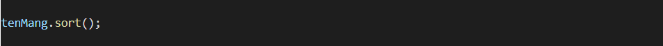
Ví dụ:
Kết quả ta nhận được:
Hàm reverse(): Đảo ngược mảng
Hàm reverse() có tác dụng đảo ngược vị trí các phần tử của mảng (lưu ý là đảo ngược chớ không phải là sắp xếp ngược lại của hàm sort() nha các bạn).
Cú pháp:
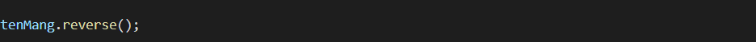
Ví dụ:
Kết quả ta được:
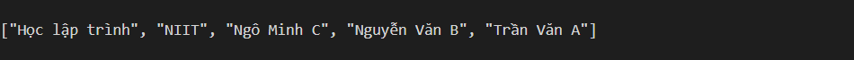
Vậy là mình đã giới thiệu toàn bộ cho các bạn toàn bộ những kiến thức nền tảng nhất về các hàm, thuộc tính của Mảng trong JS để các bạn có thể hiểu và thao tác tốt hơn với chúng. Ở những bài viết sau mình sẽ vẫn tiếp tục nói đến nó nhưng sẽ là ở mức độ nâng cao hơn. Trong bất kỳ ngôn ngữ lập trình nào dù là JS, PHP hay Java ... thì mảng đều là phần kiến thức rất quan trọng. Do đó, các bạn hãy đọc lại giải thích và luyện tập các cách khai báo, truy xuất đến các phần tử và các hàm làm việc với mảng nhé. Hẹn gặp lại các bạn ở bài học tiếp theo.
Câu lệnh if
Câu lệnh if trong JavaScript sẽ cho phép bạn thực thi một khối lệnh dựa trên việc đánh giá điều kiện đưa ra.
Sơ đồ hoạt động của câu lệnh if:
Sơ đồ trên hoạt động như sau:
Trong đó:

Chạy chương trình, ta có kết quả:
Như vậy, điều kiện đã trả về true và câu lệnh bên trong ngoặc nhọn { } được thực thi.
Vậy nếu biểu thức trả về false thì sao?
Khi chạy chương trình, chẳng thấy cái gì thay đổi cả. Đơn giản chỉ là biểu thức điều kiện trả về false nên câu lệnh trong { } chưa được thực thi. Để tiếp tục xử lý nếu điều kiện trả về sai thì chúng ta có ...
Câu lệnh if else trong JS
Câu lệnh if else thì đầy đủ hơn câu lệnh if. Chúng ta có thể dựa vào kết quả trả về để xử lý cả hai trường hợp đúng hoặc sai của điều kiện.
Sơ đồ hoạt động:
Đối với sơ đồ này:
Trong đó:
Dĩ nhiên, kết quả nhận được chắc chắn là:
Tuy nhiên, bây giờ cố tình để điều kiện trả về false xem như thế nào nhé:
Kết quả:
Câu lệnh if else if trong JavaScript
Câu lệnh if else if trong JavaScript là câu lệnh if else lồng nhau
Cú pháp câu lệnh if else if như sau:
Trong đó:
Kết quả:
Vừa rồi mình đã mang đến cho các bạn ba loại câu lệnh rẽ nhánh thông dụng nhất trong JS rồi. Ở phần tiếp theo mình sẽ giới thiệu loại câu lệnh rẽ nhánh khác hơn một chút và đặc thù hơn nhé. Bài học đến đây tạm kết thúc và hẹn gặp lại các bạn ở phần 2. Nhớ thực hành thật nhiều để hiểu cách hoạt động cũng như cú pháp của nó nhé. Tạm biệt!!!
Câu lệnh switch case trong JS
Câu lệnh switch case cũng thuộc loại câu lệnh rẽ nhánh như câu lệnh if else nhưng nó sẽ thực hiện các hành động dựa trên một loạt các điều kiện khác nhau.
Sơ đồ hoạt động:
Nó hoạt động đơn giản như thế này:
Trong đó:
Bạn còn nhớ phương thức prompt không?
Chúng ta sẽ lấy lựa chọn từ phía người dùng nhé:
Lưu ý: Vì dữ liệu nhập vào từ người dùng đều là text nên mình sử dụng parseInt để chuyển thành number cho dễ thực hiện.
Kết quả khi chạy chương trình trên trình duyệt ta được như sau:
Phương thức prompt sẽ thông báo để người dùng nhập dữ liệu vào.
Trong trường hợp này mình nhập là 1, kết quả là...
Nếu mình không nhập gì nhưng vẫn nhấn OK thì...
Trong câu lệnh switch case, nếu bạn bỏ qua từ khóa break, chương trình sẽ tiếp tục thực thi câu lệnh tiếp theo, cho dù case đó là gì đi nữa.
Kết quả nhận được là:
Hãy thử làm tiếp một ví dụ nữa để hiểu hơn về câu lệnh switch case nhé.
Ví dụ: In ra màn hình console xem hôm nay là thứ mấy
Đầu tiên, ta phải có dữ liệu đầu vào như sau:
Sau khi có giá trị của thứ trả về từ câu lệnh d.getDay() rồi, ta có thể xử lý trong câu lệnh switch case như sau:
Bạn thử chạy xem, hôm nay là thứ mấy?
Câu lệnh switch case có rất nhiều ứng dụng. Tuy nhiên, không phải lúc nào cũng sử dụng chúng. Ví dụ, đây là chương trình chào buổi sáng tương ứng với ngày trong tuần:
Tuy nhiên, chúng ta có thể xử lý như thế này:
Kết quả nhận được tương tự nhau. Ngắn gọn hơn nhiều phải không nào? Mình đã sử dụng toán tử hoặc || để xử lý trong biểu thức điều kiện. Ví dụ vừa rồi để nhắc các bạn rằng đừng lạm dụng switch case nhiều quá nhé.
Mình sẽ có một bài tập giao cho các bạn để giúp hiểu thêm và thực hành trơn tru hơn.
Bài tập:
JavaScript hỗ trợ nhiều vòng lặp nhưng chủ yếu chia ra làm hai loại lặp với số lần đã biết và lặp với số lần chưa biết. Giờ thì cùng mình đi tìm hiểu từng loại nào.
Vòng lặp là gì?
Trong lập trình chúng ta thường sẽ làm một việc gì đó nhiều lần (lặp đi lặp lại), như nhập vào một danh sách sinh viên, hay đếm có bao nhiêu số chẵn trong khoảng từ 1 - 100. Cũng có cách đó nhưng mà bạn có thể viết 100 hay một ngàn dòng if, hay switch - case. Điều này cũng khả thi cho tới khi con số đó lên đến cả triệu thậm chí lớn hơn.
Công việc thì lặp đi lặp lại, nhưng ta không thể viết code cả trăm lần, triệu lần như thế được. Như vậy rất mất công và code thì cứ phình to. Chính vì thế, vòng lặp ra đời để giải quyết vấn đề này.
Vòng lặp thực hiện những công việc tương tự nhau với số lần biết trước hoặc số lần chưa biết trước.
Vòng lặp trong JavaScript thì chia ra làm hai loại:
Nếu bạn đã biết trước số lần lặp thì nên sử dụng vòng lặp for hoặc vòng lặp for in để tối ưu hóa chương trình.
Vòng lặp for trong JavaScript
Vòng lặp for là vòng lặp được sử dụng lặp lại một nhiệm vụ nhất định với số lần lặp cho trước.
Để hiểu cách hoạt động của vòng lặp for ta có sơ đồ sau:
Như bạn thấy, khi bắt đầu thì ta sẽ khởi tạo biến lặp cho biết số lần lặp chính xác luôn.
Cú pháp của vòng lặp for như sau:
Trong đó:
Khi chạy chương trình trên, trong màn hình console sẽ in ra 10 lần Học JS.
Ngoài ra, bạn cũng có thể cập nhật biến lặp ở trong thân của vòng lặp:
Và vì JavaScript rất linh hoạt nên nếu bạn quên từ khóa khai báo biến lặp như thế này:
Thì cũng không có vấn đề gì cả. JS cũng hỗ trợ bạn khai báo biến lặp ngoài vòng lặp, như thế này:
Nhưng bạn cũng nên cẩn thận khi khai báo biến lặp bên ngoài vòng lặp.
Đôi khi có thể khiến bạn khó kiểm soát nếu trong quá trình maintain có thêm code, sửa, xóa code.
Và, nếu bạn khai báo biến lặp như thế này:
Thì bên ngoài vòng lặp, ta có thể truy cập vào biến đếm, thậm chí thay đổi nó.
Do đó, nếu muốn vòng lặp hoạt động an toàn, không bị can thiệp từ bên ngoài vòng lặp, mình recomment các bạn nên sử dụng từ khóa let để khai báo biến trong vòng lặp:
Bạn có thể sử dụng vòng lặp for để lặp qua mảng đơn.

Thêm nữa, bạn cũng có thể sử dụng vòng lặp bên trong vòng lặp. Ví dụ:
Vòng lặp for in trong JavaScript
Vòng lặp for in trong JavaScript dùng để lặp qua các thuộc tính của một đối tượng. Khối lệnh bên trong vòng lặp sẽ được thực thi một lần cho mỗi thuộc tính.
Với vòng lặp for in này mình không khuyến khích các bạn sử dụng cho mảng. Thường thì nó sẽ được sử dụng để debug bởi vì nó dễ dàng kiểm tra các thuộc tính của một đối tượng (object).
Cú pháp:
Trong đó:
Đầu tiên, ta tạo một đối tượng:
Bây giờ, ta sử dụng vòng lặp for in để lặp qua đối tượng này:
Bạn cũng có thể in ra tên thuộc tính của đối tượng như sau:
Ngoài ra, bạn cũng có thể thực hiện như thế này để in cặp key: value của đối tượng
Lưu ý: Mình sử dụng cặp dấu ` ` chứ không phải nháy đơn ' ' các bạn nhé. Sử dụng cặp dấu ` ` thì chương trình sẽ xét các giá trị bên trong ${ } như biến, tham chiếu... còn những thứ khác thì sẽ coi như là text.
Vậy là mình đã vừa giới thiệu đến các bạn 2 dạng vòng lặp để sử dụng lặp với số lần biết trước. Hi vọng qua bài học này các bạn sẽ xem lại và thực hành thật nhiều, nhằm củng cố và hiểu hơn về chúng nhé. Hãy cố gắng nắm thật chắc để sẵn sàng bước sang bài học về 2 dạng vòng lặp còn lại trong bài tiếp theo. Xin chào và hẹn gặp lại!!!

Vòng lặp với số lần chưa biết trước
Vòng lặp while trong JS
Vòng lặp while thường được sử dụng để lặp đi lặp lại một khối lập mà không biết trước số lần lặp. Sơ đồ dưới đây mô tả hoạt động của vòng lặp while:
Như bạn thấy trong sơ đồ, khi bắt đầu chương trình, vòng lặp while sẽ kiểm tra điều kiện trước.
Trong đó:
Đối với đề như này thì mình không thể sử dụng vòng lặp for vì mình không biết có thể sẽ cần lặp lại bao nhiêu lần để tìm ra 8 số đó.
Vì vậy chúng ta chỉ còn cách sử dụng câu lệnh lặp không biết số lần lặp. Mình sẽ sử dụng vòng lặp while như sau:
Bởi vì số phải lớn hơn 10 nên khi khởi tạo biến lặp ta sẽ cho nó bằng 10 luôn.
Bây giờ chúng ta kiểm tra xem number đang giữ giá trị nào nhé:
Như vậy, biến number đã lặp từ 10 lên đến 89. Một ví dụ đơn giản khác mà vòng lặp while có thể thay thế vòng lặp for:
Kết quả sẽ cho ra tương tự như vòng lặp for.
Vòng lặp do while trong JS
Vòng lặp do while gần giống với vòng lặp while, đều là vòng lặp không biết trước số lần lặp. Nhưng điểm khác nhau là vòng lặp này sẽ chạy ít nhất 1 lần lặp cho dù điều kiện đúng hay sai. Bởi vì vòng lặp này kiểm tra điều kiện sau khi thực thi công việc.
Sơ đồ hoạt động:
Dưới đây là cú pháp của vòng lặp này:

Trong đó:
Kết quả ta được:
Bây giờ, thử thay đổi điều kiện là i > 5 xem thế nào nhé.
Kết quả:
Như bạn thấy, mặc dù kiểm tra điều kiện sẽ thấy sai ngay, nhưng do chương trình thực thi câu lệnh trước khi kiểm tra điều kiện. Do đó chúng ta vẫn có một lần thực thi như trên.
Vừa rồi là 2 vòng lặp luôn luôn được sử dụng trong những bài toán về loop trong JS. Mong rằng các bạn hãy thực hành để hiểu hơn về điểm khác nhau và cách hoạt động của chúng. Bài học lần này sẽ kết thúc tại đây. Ở phần tiếp theo và cũng là phần cuối cùng trong loạt bài liên quan đến vòng lặp chúng ta sẽ học những khái niệm mở rộng dùng trong những vòng lặp nói trên nhé. Tạm biệt!!!
Câu lệnh break và continue trong vòng lặp
Câu lệnh break
Chắc các bạn cũng quen với câu lệnh break khi sử dụng switch case ở câu lệnh rẽ nhanh trong JavaScript rồi.
Trong vòng lặp nó cũng có tác dụng tương tự đó là thoát khỏi vòng lặp luôn mà không lặp lại nữa, hay kiểm tra điều kiện gì nữa.
Khi thực hiện câu lệnh này vòng lặp sẽ lập tức dừng lại. Ví dụ: In ra số nhỏ hơn 10, nếu gặp 5 thì thoát khỏi vòng lặp:
Kết quả ta được:
Câu lệnh continue
Câu lệnh continue được sử dụng để bỏ qua một lần lặp. Hãy thử làm qua ví dụ để hiểu nó.
Ví dụ: In ra màn hình console các số nhỏ hơn 10. Nhưng số 7 là số xấu, không in. ^^
Kết quả ta được:
Như bạn thấy ở trong kết quả trên, chương trình không in ra số 7 bởi vì chúng ta đã sử dụng continue để bỏ qua lần lặp đó.
Vòng lặp for of trong JavaScript
Vòng lặp for ... in rất hữu ích để lặp qua các thuộc tính của đối tượng, nhưng để lặp qua các đối tượng có thể lặp lại như mảng và chuỗi, chúng ta có thể sử dụng for ... of.
Vòng lặp for ... of là một tính năng mới hơn của ECMAScript 6. Vòng lặp for .. of cho phép bạn lặp qua các cấu trúc dữ liệu có thể lặp lại như Array, String, Map, NodeLists, v.v.
Cú pháp của vòng lặp for .. of trong JavaScript:
Trong đó:
Kết quả:
Ví dụ: Lặp qua chuỗi
Kết quả ta được:
Vòng lặp vô hạn
Đây là vấn đề khá nan giải khi lập trình. Bạn có thể bị vòng lặp vô hạn bất cứ khi nào nếu code không chuẩn, hay không đúng logic. Điều này dễ dẫn tới treo máy hoặc tốn quá nhiều tài nguyên cho nó. Một vòng lặp vô hạn là khi điều kiện không bao giờ sai. Ví dụ như thế này:
Ở vòng lặp này, chúng ta đã bỏ quên việc tăng biến đếm. Dẫn tới i luôn bằng 0 và luôn nhỏ hơn 10. Vậy nên câu lệnh console.log(i); sẽ được hiện vĩnh viễn.
Đối với vòng lặp for nếu bạn để ba biểu thức điều kiện trong vòng lặp for trống thì bạn cũng tạo một vòng lặp vô hạn.
Đối với vòng lặp while cũng tương tự, nếu bạn bỏ quên điều kiện thì vòng lặp sẽ lặp lại mã mãi.
Hoặc đây là vòng lặp vô hạn với điều kiện luôn đúng:
Ở trên là một số ví dụ về vòng lặp vô hạn, còn rất nhiều nguyên nhân dẫn đến vòng lặp chãy mãi không ngừng. Khi lập trình thực tế thì sẽ có nhiều trường hợp mà bạn không thể nào ngờ đến, vì thế hãy chú ý nhé.
Tổng kết
Như vậy mình đã giới thiệu các bạn toàn bộ về vòng lặp trong JavaScript, một số điểm chú ý để sử dụng vòng lặp cho đúng nhé.
Trước khi sử dụng vòng lặp nên phân tích bài toán, liệu bạn có biết được trước số lần lặp hay không? Để biết sử dụng loại vòng lặp phù hợp.
Nếu không biết bao nhiêu lần lặp thì xác định điều kiện lặp để mình sử dụng vòng lặp không xác định số lần lặp, và ngược lại.
Hãy làm lại các ví dụ ở trên để hiểu hơn về các loại vòng lặp trong JavaScript.
Hẹn gặp lại các bạn trong những bài học tiếp theo.
DOM là gì?
DOM là viết tắt của từ Document Object Model. Giải thích một chút DOM là một giao diện lập trình ứng dụng (API) để thao tác với các tài liệu HTML và XML. DOM đại diện cho một tài liệu dưới dạng một cây tài liệu (Document Tree) gồm có nhiều nốt / nút / node. Nó cung cấp API cho phép bạn có thể thêm, sửa và xóa các thành phần của cây tài liệu một cách hiệu quả.
Chú ý: DOM là một trình xử lý tài liệu HTML và XML đa nền tảng (cross-platform) mà không phục thuộc vào ngôn ngữ.
HTML DOM là gì?
Khi một trang web được tải về, trình duyệt sẽ tạo ra một Document Object Model (DOM). Đối với HTML DOM thì mọi thành phần đều được xem là node, được biểu diễn trên 1 cây cấu trúc gọi là cây DOM. Các phần tử khác nhau sẽ được phân loại node khác nhau.
Có 3 loại node chính:
Đây là sơ đồ minh họa của nó:
Trong cây DOM trên:
Như bạn đã thấy mô hình DOM HTML ở bên trên. Để thao tác được với DOM thì việc đơn giản là bạn phải nhắm đến được nó. Việc này cũng giống như là CSS Selector phải nhắm đúng thì mới áp dụng được style cho HTML vậy. Vậy, chúng ta sẽ đi vào tìm hiểu một số cách để nhắm chọn phần tử DOM mà bạn muốn. Đầu tiên...
Nhắm đến phần tử DOM hàng đầu
Các phần tử hàng đầu trong DOM HTML có sẵn trực tiếp dưới dạng các thuộc tính của document. Do đó, chúng ta có thể truy cập nó bằng cách sử dụng dấu chấm . Ví dụ:
Bước 1: Vào trang web bất kỳ, ví dụ https://niithanoi.edu.vn
Sau đó đến tab Console và thử nghiệm DOM Selector
Ví dụ DOM Selector:
Thử thiết lập CSS xem nhé:
Và đây là ví dụ lấy tên thẻ:
Nhắm đến phần tử DOM bằng ID
Nếu phần tử DOM có thuộc tính id thì ban có thể dễ dàng nhắm đến nó thông qua phương thức getElementById()
Hãy xem ví dụ để hiểu cách sử dụng:
Đầu tiên ta có HTML:
Và nếu bạn viết code JS như thế này:
Thì trong màn hình console nó sẽ trả về:

Tuy nhiên, chúng ta muốn nhắm đến phần tử có id đó để làm cái gì đó như thay đổi (thiết lập) màu sắc thì làm như thế này:
Phương thức getElementById() trả về phần tử dưới dạng đối tượng, nếu không tìm thấy thì nó trả về null
Nhắm đến phần tử DOM bằng Class Name
Tương tự, bạn có thể sử dụng phương thức getElementsByClassName() để lấy tất cả các phần tử có class nào đó. Ví dụ, ta có HTML như sau:
Bây giờ, muốn lấy tất cả các phần tử có class là nhom1 thì làm thế này:
Bởi vì có thể sẽ lấy được nhiều phần tử nên x trả về sẽ giống như một mảng và có thể truy cập thông qua chỉ số index.
Hơi khó hiểu nhỉ. Kiểm tra thử xem lấy được bao nhiêu phần tử có class là nhom1 nhé:
Bây giờ, thông qua chỉ số index là ta có thể truy cập, sửa đổi nó như thế này:
Ta cũng có thể lặp qua các phần tử này bằng cách sử dụng vòng lặp for in:
Bạn thử chạy xem kết quả có đúng mong đợi không nhé. Okay vậy là mình vừa mới giới thiệu những khái niệm cơ bản nhất về DOM cũng như cách để truy cập vào 1 DOM element như thế nào rồi. Trong phần tới chúng ta sẽ đi vào những cách truy cập khác và những thao tác xoay quanh DOM nhé. Các bạn hãy xem lại thật kĩ và thực hành để hiểu hơn về cơ chế của DOM. Xin chào và hẹn gặp lại.

Nhắm đến phần tử DOM bằng Tag Name
Bạn cũng có thể nhắm đến các phần tử HTML theo tên thẻ bằng phương thức getElementsByTagName().
Phương thức này cũng trả về một đối tượng giống mảng của tất cả các phần tử con với tên thẻ đã cho.
Ta có HTML:
Bây giờ sử dụng phương thức getElementsByTagName() để lấy tất cả các phần tử p
Kết quả trả về giống như một mảng. Ta thử kiểm tra xem nó lấy được bao nhiêu phần tử nhé.
Bây giờ thì dễ rồi đúng không? Đã lấy được về chính xác rồi. Bây giờ bạn cứ thoải mái ABC, XYZ :))
Vì nó giống mảng nên ta có thể lặp qua nhé.
Nhắm đến phần tử DOM bằng CSS Selector
Đúng vậy, nếu bạn có CSS Selector thì bạn cũng có thể thông qua CSS Selector đó để nhắm đến phần tử mà bạn cần.
Phương thức querySelectorAll() trả về danh sách tất cả các phần tử khớp với các CSS Selector được chỉ định. Bạn có thể thao tác với nó giống như bất kỳ mảng nào.
Ví dụ ta có HTML sau:
Bây giờ, sử dụng phương thức querySelectorAll() để lấy tất cả các phần tử li về nhé:
Bây giờ chúng ta đã nhắm đến được chúng thành công, lặp qua nó xem sao nào.
Ok. Bây giờ thử với CSS Selector khác xem nhé:
Bạn thử chạy kết quả trên trình duyệt xem. Có được kết quả như mong đợi không?
Ghi chú: Phương thức querySelectorAll() hoạt động với cả pesudo class. Tuy nhiên pesudo element thì không.
Ok. Như vậy là bạn đã thành công trong việc nhắm chọn đến phần tử DOM. Vẫn còn một số phương thức như là getElementByName(), getElementByTagName() có thể được sử dụng để nhắm đến các phần tử DOM mà bạn muốn. Nó cũng tương tự như phương thức getElementById() hay getElementsByClassName() thôi.
Vậy là qua 2 phần mình đã giúp các bạn nắm được toàn bộ những cách thức, phương thức để có thể nhắm đến, truy xuất được một hay nhiều phần tử nằm trong DOM rồi. Hi vọng rằng chúng ta sẽ có thể thao tác thật trơn tru và hiểu nó một cách chính xác trước khi bước sang phần mới rất quan trọng đó chính là thao tác làm việc với DOM. Phần 2 của chuỗi bài học về DOM sẽ dừng lại tại đây. Hẹn gặp lại các bạn trong những bài học tới.
Thao tác với DOM trong JavaScript
Thao tác với DOM trong JavaScript là gì?
Thao tác, tương tác với DOM hiểu ra cũng đơn giản như thế này:
"A, thằng áo đỏ kia. Bây giờ mày sẽ mặc áo xanh" hoặc "Thằng con con bên cạnh thằng áo đỏ kia, khi nghe tao ra hiệu mày sẽ chồng cây chuối"
Đó, Thao tác với DOM chỉ đơn giản là gọi đến thằng nào đó và bắt nó làm gì đó. :D
Với JavaScript, bạn có đầy đủ các công cụ để thao tác với các phần tử DOM. Nói chung, tất cả những gì mà HTML có, JavaScript đều có thể tác động, thay đổi được chúng:
Thao tác với DOM sử dụng thuộc tính id
Thuộc tính id sẽ trả vể ID của một phần tử là định danh duy nhất cho mỗi phần tử bạn có thể thay đổi ID nếu bạn muốn.
Để hiểu cách sử dụng thuộc tính id để thao tác với DOM thì hãy xem xét ví dụ sau:
Ví dụ thay đổi id message thành xinChao
Trong mã HTML thì rõ ràng chúng ta đặt id của thẻ p là message. Nhưng khi chạy trên trình duyệt, bạn sẽ thấy thẻ
có id là xinChao
Câu lệnh này:
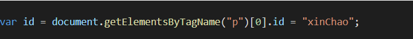
Viết liền như thế có thể sẽ làm bạn hơi khó hiểu. Vì thế, mình sẽ viết lại như sau:
Đầu tiên,
Bây giờ chúng ta có arrays_p là một tập hợp giống như một mảng, chứa các thẻ p. Và bạn còn nhớ cách truy cập mảng trong JavaScript rồi chứ?
Ở ví dụ trên mình đã cố tình để thẻ
là phần tử ngay sau thẻ mở body. Thế nên, nó sẽ là phần tử đầu tiên trong mảng chúng ta lấy được.
Tiếp theo, ta sẽ gán id mới cho phần tử này:
Cách làm này có vẻ là hơi rắc rối nhỉ. Có cách nào làm khác không? Có. Phương thức document.getElementById() cũng sẽ cho kết quả tương tự.
Thử chạy trên trình duyệt để xem kết quả bạn nhé.
Bây giờ, chúng ta đã nhắm đến chính xác phần tử p có id là message để thực hiện thay đổi id thành công. Vì sử dụng phương thức getElementById(), bạn sẽ nhắm chính xác cho dù thẻ p này có nằm ở đâu đi nữa.
Thao tác với DOM sử dụng thuộc tính className
Sử dụng thuộc tính className bạn có thể thực hiện gán class cho phần tử DOM nào đó. Ví dụ, ta có file HTML như sau:
Sau khi click vào nút thì class normal sẽ được thay thế bằng red. Nhưng lưu ý, cách làm này sẽ thay thế toàn bộ class trong phần tử p. Để thêm được nhiều class thì đơn giản bạn chỉ cần tách các class bởi dấu cách như thế này: "red group1 smallTitel"
Thao tác với DOM sử dụng thuộc tính tagName
Thuộc tính tagName trả về tên của phần tử mà bạn nhắm tới. Ví dụ:
Thao tác với DOM sử dụng thuộc tính innerHTML
Thuộc tính innerHTML (bên trong HTML) trả về mã HTML bên trong phần tử hiện tại. Đoạn mã HTML này là chuỗi kí tự chứa tất cả phần tử bên trong, bao gồm các node phần tử và node văn bản.
Ví dụ:
Đoạn mã này đơn giản là lấy nội dung trong phần tử này và gán nó vào phần tử khác.
Thao tác với DOM sử dụng thuộc tính outerHTML
Trả về mã HTML của phần tử hiện tại. Có thể hiểu là outerHTML = tagName + innerHTML
Ví dụ, đây là tất cả mà outerHTML có thể lấy được.
Ví dụ: Thay thế phần tử h1 thành h3
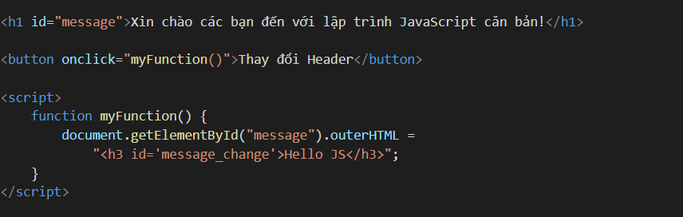
Như vậy, JavaScript sẽ tìm và thay thế toàn bộ h1 thành nội dung mà chúng ta gán cho nó.
Có nghĩa là sau khi bất vào nút Thay đổi Header thì mã HTML sẽ trở thành như thế này:
Vừa rồi mình đã cùng các bạn đi qua một số cách thao tác với DOM để thay đổi những element, attribute,... của nó. Mình sẽ tạm dừng phần học tại đây để đảm bảo lượng kiến thức không bị quá nhiều. Trong bài tới, mình sẽ giới thiệu với các bạn những thao tác còn lại. Hẹn gặp lại!!!
Thao tác với DOM sử dụng thuộc tính attributes
Thuộc tính này sẽ trả về tập các thuộc tính của phần tử bạn nhắm đến mà nó nó như: id, name, type, title, href, …. Ví dụ: Đầu tiên ta có HTML như sau. br
Bây giờ, ta có hàm như sau:
Cũng như mảng, thuộc tính này bắt đầu đếm từ 0 ở đây mình muốn xem tên thuộc tính thứ 4 thì sẽ gọi attributes[3] như vậy kết quả trả về là value
Thao tác với DOM sử dụng thuộc tính style
Thuộc tính style được sử dụng để thiết lập CSS cho phần tử được nhắm đến. Ví dụ:
Trong đó:
Lưu ý: Từ từ đầu tiên viết thường, các từ tiếp theo viết HOA chữ cái đầu tiên, không có dấu gạch ngang như trong CSS.
Ví dụ.
Trong CSS ta viết như thế này:
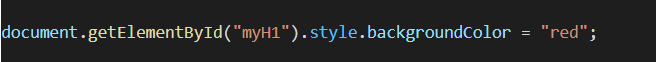
Nhưng khi thiết lập qua DOM với thuộc tính style thì ta cần ghi như sau:
Ví dụ thiết lập viền cho phần tử (thuộc tính CSS có nhiều giá trị):
Khi thực hiện thành công, style sẽ được thêm vào theo kiểu inline trên trình duyệt như thế này:
Đó, với DOM, bạn có thể thiết lập CSS cho phần tử mà không cần mở đến file CSS.
Một số thuộc tính quan hệ
Trong cây DOM, có rất nhiều các node có quan hệ với nhau như node cha, node anh chị em, node đầu tiên trong nhóm, node cuối cùng trong nhóm...
Tóm lại, các mối quan hệ như thế này đều có các thuộc tính tương ứng để cho phép bạn sử dụng.

Bây giờ, ta chọn đến node cha của thẻ li có id là active như thế này:
Đối với các thuộc tính quan hệ khác thì cũng tương tự.
Lưu ý: Trong DOM, tất cả các phần của tài liệu, chẳng hạn như phần tử, thuộc tính, văn bản, v.v đều tính là node
Do đó, tính cả các thẻ li, id, text ở trong thẻ ul trên ta có 11 node.
Lấy phần tử đầu tiên trong ul
Lưu ý: Nếu có khoảng trống ở trước phần tử đầu tiên (dấu cách, xuống dòng, tab...) thì kết quả trả về là undefined. Do đó bạn thấy mình phải đặt HTML như thế kia.
Một số phương thức phổ biến để thao tác với DOM khác
Như bạn đã biết, thông qua JavaScript chúng ta đã lấy được các phần tử HTML, thay đổi thuộc tính, thêm thuộc tính cho nó.
Ngoài ra bạn cũng có thể:
HTML:
Bây giờ ta sẽ tạo một hàm để thêm một khóa học mới:
Có thể thêm node thì cũng có thể xóa node với phương thức removeChild()
Đầu tiên, ta thêm một button nữa:
Sau đó ta tạo một hàm xóa node đầu tiên trong ul:

Khi bấm vào nút Xóa khóa học thì nó sẽ xóa thẻ li đầu tiên trong ul, và cứ thế.
Vậy là qua 4 phần mình đã cùng các bạn đi qua hầu hết những thao tác hay sử dụng nhất khi thao tác với DOM cũng như những cách để chúng ta có thể truy cập vào DOM rồi. Bài học khá dài chia làm nhiều phần nên mình mong rằng tất cả các bạn sẽ luyện tập thật kĩ để nắm vững những kiến thức này nhé. Hẹn gặp lại các bạn trong những bài học tới.
Như các bạn biết, nhiệm vụ quan trọng hàng đầu của JavaScript là tạo ra tính tương tác ở phía client. Đó chính là đang đề cập đến khả năng xử lý các sự kiện của DOM trong JS.
Sự kiện là gì?
Một trang web với các thao tác như click chuột, hay di chuột,… Đây được xem là các sự kiện và JavaScript có thể bắt các sự kiện này thông qua HTML DOM.
Các sự kiện này được cụ thể bằng các thuộc tính HMTL như: onclick (click chuột), onmouseover (di chuột qua), ….
Và bằng cách lắng nghe các sự kiện và người dùng tương tác, ta gửi trả phản hồi lại tương ứng đó gọi là xử lý sự kiện.
Bạn có thể thêm sự kiện bằng cách thêm thuộc tính sự kiện vào phần tử HTML
Ví dụ một phản ứng với sự kiện click chuột của người dùng:
Kết quả ta được:
Các sự kiện phổ biến thường gặp
Dưới đây mô tả các sự kiện phổ biến thường gặp:
Xử lý sự kiện JavaScript DOM
Đó, bây giờ chúng ta sẽ sử dụng JavaScript để xử lý một số sự kiện phổ biến của DOM nhé.
Chèn vào thuộc tính sự kiện của HTML DOM
Cú pháp tổng quát để thêm một sự kiện mới vào một phần tử HTML như sau:
Trong đó:
Chúng ta được kết quả giống với ví dụ đầu tiên. Nhưng ở đây mình thêm sự kiện bằng JavaScript DOM
Đối với các phần tử HTML mà có nhiều hơn 1 lựa chọn thì bạn cần phải chạy vòng lặp để thêm sự kiện cho nó.
Ví dụ, ta có HTML:
Bây giờ, thực hiện lắng nghe sự kiện click chuột của người dùng. Nếu click vào khóa học nào thì màu của khóa học đó đổi thành màu đỏ.
Ở đây bạn thấy mình sử dụng từ khóa this. Từ khóa này mình sẽ giải thích ở một bài khác. Bây giờ bạn chỉ cần hiểu hoạt động này như là:
"Á À, tao bắt được mày click vào đây rồi nhá. Tô màu đỏ ngay cho thằng cho thằng này (this) thôi" ^^
Rồi vậy là mình đã vừa giới thiệu qua cho các bạn hiểu về sự kiện trong DOM và phương thức đầu tiên để xử lí. Những phương thức còn lại mình sẽ nói trong phần tiếp theo nhé. Tránh anh em đầu tuần phải học căng thẳng. Hẹn gặp lại mọi người trong những bài học tiếp theo.
Sử dụng phương thức addEvenListener()
Phương thức này cũng cho phép ta gán sự kiện cho một phần tử HTML DOM, điểm khác các phương thức trên là có thể gán một hoặc nhiều events vào một phần tử HTML mà không xóa đi các sự kiện khác.
Khi ta sử dụng phương thức addEventsListenner(), JavaScript sẽ tách biệt nó với HTML Makup.
Bạn cũng có thể dễ dàng xóa bất kỳ event listenner bằng cách sử dụng phương thức removeEvenListenner()
Cú pháp để thêm sự kiện như sau:
Trong đó:
Ví dụ, ta có một nút:
Bây giờ, tiếp tục viết code JS như sau:
Bạn hãy thử chạy trên trình duyệt để xem kết quả.
Và ấn F12 để kiểm tra luôn xem mã HTML có thay đổi gì không nhé.
Nên sử dụng Bubbling hay Event capturing?
Có hai cách để sự kiện được lan truyền (event propagation) trong HTML DOM: bubbling và capturing.
> Khái niệm Event propagation là cách định nghĩa thứ tự của HTML element khi event xảy ra.
Ví dụ nếu ta có một phần tử p bên trong một phần tử div.
Thì câu hỏi đặt ra là...
Khi người dùng click lên phần tử p, thì sự kiện “click” của phần tử nào sẽ được xử lý trước?
Trong bubbling, sự kiện của phần tử bên trong cùng sẽ được xử lý trước:
Giá trị mặc định là false (sử dụng bubbling propagation). Khi giá trị tham số được thiết lập là true, sự kiện sẽ sử dụng capturing propagation.
Xóa một sự kiện với removeEventListener()
Phương thức removeEventListener() cho phép xóa sự kiện đã được gắn vào phần tử HTML trước đó bằng phương thức addEventListener()
Cú pháp:
Trong đó:
Sau đó, ta tạo một hàm tạo số ngẫu nhiên:
Rồi sử dụng addEventListener() để thêm sự kiện vào thẻ div chỉ định.
Và bây giờ là thực hiện xóa sự kiện chỉ định khi sự kiện click được kích hoạt.
> Lưu ý: Phương thức addEventListener() và removeEventListener() không được hỗ trợ trong IE 8 và các phiên bản trước đó.
DOM trong JavaScript có thể thao tác với các phần tử của HTML và xử lý sự kiện. Như vậy qua bài này mình đã giới thiệu gần như cơ bản nhất về xử lý sự kiện DOM trong JavaScript, bạn cố gắng thực hành lại các ví dụ để hiểu thêm nhé. Hẹn gặp lại bạn ở bài học tiếp theo.
Sẽ có rất nhiều lỗi không lường trước khi lập trình. Hiểu được điều đó, JavaScript có cung cấp cơ chế xử lý lỗi đó là try - catch - finally. Giờ hãy cùng mình đi vào chi tiết để hiểu sâu hơn về những khái niệm này.
Tại sao cần bắt lỗi và xử lý lỗi
JavaScript là một ngôn ngữ lỏng lẻo (dynamic), nó không đưa ra lỗi trong lúc biên dịch.
Một số trường hợp bạn sẽ gặp phải lúc runtime error cho những biến không được định nghĩa hoặc là gọi những hàm chưa được định nghĩa, hoặc là lỗi do nhập sai, lỗi xuất hiện một cách không lường trước được.
Một lỗi runtime error là một lỗi rất nghiêm trọng. Nó sẽ phơi bày bộ mặt yếu kém của bạn cho người dùng thấy. Khiến họ có trải nghiệm tệ hại. Mặc dù, Bug là everywhere!!! Nhưng, bạn cần lường trước để bắt lỗi và xử lý nó.
Try - Catch - Finally
Cơ chế bắt và xử lý lỗi try - catch - finally trong JavaScript cũng tương tự như Java hay C#
Cú pháp try - catch - finally:
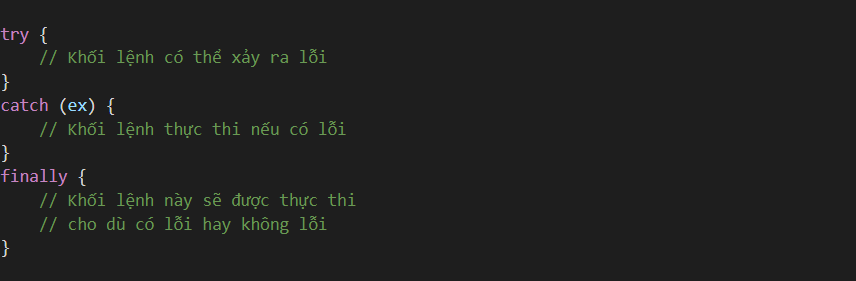
Trong đó:
Kết quả chạy trên trình duyệt như sau:
Kết quả trên cho thấy:
+ Dòng lệnh đầu tiên là in ra: Lập trình JavaScript căn bản.
+ Khối try:
Khi chạy chương trình, kết quả nhận được là:
Vừa rồi mình đã giới thiệu cho các bạn một nữa về xử lí lỗi trong JS rồi. Mong rằng bài học khởi động nhẹ nhàng này sẽ không làm khó các bạn và giúp mọi người có thể quay trở lại nhịp học tập bình thường tốt nhất. Hẹn gặp lại các bạn trong phần tiếp theo nhé!!!
Sẽ có rất nhiều lỗi không lường trước khi lập trình. Hiểu được điều đó, JavaScript có cung cấp cơ chế xử lý lỗi đó là try - catch - finally. Giờ hãy cùng mình đi vào chi tiết để hiểu sâu hơn về những khái niệm này.
Tại sao cần bắt lỗi và xử lý lỗi
JavaScript là một ngôn ngữ lỏng lẻo (dynamic), nó không đưa ra lỗi trong lúc biên dịch.
Một số trường hợp bạn sẽ gặp phải lúc runtime error cho những biến không được định nghĩa hoặc là gọi những hàm chưa được định nghĩa, hoặc là lỗi do nhập sai, lỗi xuất hiện một cách không lường trước được.
Một lỗi runtime error là một lỗi rất nghiêm trọng. Nó sẽ phơi bày bộ mặt yếu kém của bạn cho người dùng thấy. Khiến họ có trải nghiệm tệ hại. Mặc dù, Bug là everywhere!!! Nhưng, bạn cần lường trước để bắt lỗi và xử lý nó.
Try - Catch - Finally
Cơ chế bắt và xử lý lỗi try - catch - finally trong JavaScript cũng tương tự như Java hay C#
Cú pháp try - catch - finally:
Trong đó:
Kết quả chạy trên trình duyệt như sau:
Kết quả trên cho thấy:
+ Dòng lệnh đầu tiên là in ra: Lập trình JavaScript căn bản.
+ Khối try:
Khi chạy chương trình, kết quả nhận được là:
Vừa rồi mình đã giới thiệu cho các bạn một nữa về xử lí lỗi trong JS rồi. Mong rằng bài học khởi động nhẹ nhàng này sẽ không làm khó các bạn và giúp mọi người có thể quay trở lại nhịp học tập bình thường tốt nhất. Hẹn gặp lại các bạn trong phần tiếp theo nhé!!!
Sẽ có rất nhiều lỗi không lường trước khi lập trình. Hiểu được điều đó, JavaScript có cung cấp cơ chế xử lý lỗi đó là try - catch - finally. Giờ hãy cùng mình đi vào chi tiết để hiểu sâu hơn về những khái niệm này.
Tại sao cần bắt lỗi và xử lý lỗi
JavaScript là một ngôn ngữ lỏng lẻo (dynamic), nó không đưa ra lỗi trong lúc biên dịch.
Một số trường hợp bạn sẽ gặp phải lúc runtime error cho những biến không được định nghĩa hoặc là gọi những hàm chưa được định nghĩa, hoặc là lỗi do nhập sai, lỗi xuất hiện một cách không lường trước được.
Một lỗi runtime error là một lỗi rất nghiêm trọng. Nó sẽ phơi bày bộ mặt yếu kém của bạn cho người dùng thấy. Khiến họ có trải nghiệm tệ hại. Mặc dù, Bug là everywhere!!! Nhưng, bạn cần lường trước để bắt lỗi và xử lý nó.
Try - Catch - Finally
Cơ chế bắt và xử lý lỗi try - catch - finally trong JavaScript cũng tương tự như Java hay C#
Cú pháp try - catch - finally:
Trong đó:
Kết quả chạy trên trình duyệt như sau:
Kết quả trên cho thấy:
+ Dòng lệnh đầu tiên là in ra: Lập trình JavaScript căn bản.
+ Khối try:
Khi chạy chương trình, kết quả nhận được là:
Vừa rồi mình đã giới thiệu cho các bạn một nữa về xử lí lỗi trong JS rồi. Mong rằng bài học khởi động nhẹ nhàng này sẽ không làm khó các bạn và giúp mọi người có thể quay trở lại nhịp học tập bình thường tốt nhất. Hẹn gặp lại các bạn trong phần tiếp theo nhé!!!
Sẽ có rất nhiều lỗi không lường trước khi lập trình. Hiểu được điều đó, JavaScript có cung cấp cơ chế xử lý lỗi đó là try - catch - finally. Giờ hãy cùng mình đi vào chi tiết để hiểu sâu hơn về những khái niệm này.
Tại sao cần bắt lỗi và xử lý lỗi
JavaScript là một ngôn ngữ lỏng lẻo (dynamic), nó không đưa ra lỗi trong lúc biên dịch.
Một số trường hợp bạn sẽ gặp phải lúc runtime error cho những biến không được định nghĩa hoặc là gọi những hàm chưa được định nghĩa, hoặc là lỗi do nhập sai, lỗi xuất hiện một cách không lường trước được.
Một lỗi runtime error là một lỗi rất nghiêm trọng. Nó sẽ phơi bày bộ mặt yếu kém của bạn cho người dùng thấy. Khiến họ có trải nghiệm tệ hại. Mặc dù, Bug là everywhere!!! Nhưng, bạn cần lường trước để bắt lỗi và xử lý nó.
Try - Catch - Finally
Cơ chế bắt và xử lý lỗi try - catch - finally trong JavaScript cũng tương tự như Java hay C#
Cú pháp try - catch - finally:
Trong đó:
Kết quả chạy trên trình duyệt như sau:
Kết quả trên cho thấy:
+ Dòng lệnh đầu tiên là in ra: Lập trình JavaScript căn bản.
+ Khối try:
Khi chạy chương trình, kết quả nhận được là:
Vừa rồi mình đã giới thiệu cho các bạn một nữa về xử lí lỗi trong JS rồi. Mong rằng bài học khởi động nhẹ nhàng này sẽ không làm khó các bạn và giúp mọi người có thể quay trở lại nhịp học tập bình thường tốt nhất. Hẹn gặp lại các bạn trong phần tiếp theo nhé!!!
Sẽ có rất nhiều lỗi không lường trước khi lập trình. Hiểu được điều đó, JavaScript có cung cấp cơ chế xử lý lỗi đó là try - catch - finally. Giờ hãy cùng mình đi vào chi tiết để hiểu sâu hơn về những khái niệm này.
Tại sao cần bắt lỗi và xử lý lỗi
JavaScript là một ngôn ngữ lỏng lẻo (dynamic), nó không đưa ra lỗi trong lúc biên dịch.
Một số trường hợp bạn sẽ gặp phải lúc runtime error cho những biến không được định nghĩa hoặc là gọi những hàm chưa được định nghĩa, hoặc là lỗi do nhập sai, lỗi xuất hiện một cách không lường trước được.
Một lỗi runtime error là một lỗi rất nghiêm trọng. Nó sẽ phơi bày bộ mặt yếu kém của bạn cho người dùng thấy. Khiến họ có trải nghiệm tệ hại. Mặc dù, Bug là everywhere!!! Nhưng, bạn cần lường trước để bắt lỗi và xử lý nó.
Try - Catch - Finally
Cơ chế bắt và xử lý lỗi try - catch - finally trong JavaScript cũng tương tự như Java hay C#
Cú pháp try - catch - finally:
Trong đó:
Kết quả chạy trên trình duyệt như sau:
Kết quả trên cho thấy:
+ Dòng lệnh đầu tiên là in ra: Lập trình JavaScript căn bản.
+ Khối try:
Khi chạy chương trình, kết quả nhận được là:
Vừa rồi mình đã giới thiệu cho các bạn một nữa về xử lí lỗi trong JS rồi. Mong rằng bài học khởi động nhẹ nhàng này sẽ không làm khó các bạn và giúp mọi người có thể quay trở lại nhịp học tập bình thường tốt nhất. Hẹn gặp lại các bạn trong phần tiếp theo nhé!!!
Tại sao cần bắt lỗi và xử lý lỗi
JavaScript là một ngôn ngữ lỏng lẻo (dynamic), nó không đưa ra lỗi trong lúc biên dịch.
Một số trường hợp bạn sẽ gặp phải lúc runtime error cho những biến không được định nghĩa hoặc là gọi những hàm chưa được định nghĩa, hoặc là lỗi do nhập sai, lỗi xuất hiện một cách không lường trước được.
Một lỗi runtime error là một lỗi rất nghiêm trọng. Nó sẽ phơi bày bộ mặt yếu kém của bạn cho người dùng thấy. Khiến họ có trải nghiệm tệ hại. Mặc dù, Bug là everywhere!!! Nhưng, bạn cần lường trước để bắt lỗi và xử lý nó.
Try - Catch - Finally
Cơ chế bắt và xử lý lỗi try - catch - finally trong JavaScript cũng tương tự như Java hay C#
Cú pháp try - catch - finally:
Trong đó:
Kết quả chạy trên trình duyệt như sau:
Kết quả trên cho thấy:
+ Dòng lệnh đầu tiên là in ra: Lập trình JavaScript căn bản.
+ Khối try:
Khi chạy chương trình, kết quả nhận được là:
Vừa rồi mình đã giới thiệu cho các bạn một nữa về xử lí lỗi trong JS rồi. Mong rằng bài học khởi động nhẹ nhàng này sẽ không làm khó các bạn và giúp mọi người có thể quay trở lại nhịp học tập bình thường tốt nhất. Hẹn gặp lại các bạn trong phần tiếp theo nhé!!!
Tại sao cần bắt lỗi và xử lý lỗi
JavaScript là một ngôn ngữ lỏng lẻo (dynamic), nó không đưa ra lỗi trong lúc biên dịch.
Một số trường hợp bạn sẽ gặp phải lúc runtime error cho những biến không được định nghĩa hoặc là gọi những hàm chưa được định nghĩa, hoặc là lỗi do nhập sai, lỗi xuất hiện một cách không lường trước được.
Một lỗi runtime error là một lỗi rất nghiêm trọng. Nó sẽ phơi bày bộ mặt yếu kém của bạn cho người dùng thấy. Khiến họ có trải nghiệm tệ hại. Mặc dù, Bug là everywhere!!! Nhưng, bạn cần lường trước để bắt lỗi và xử lý nó.
Try - Catch - Finally
Cơ chế bắt và xử lý lỗi try - catch - finally trong JavaScript cũng tương tự như Java hay C#
Cú pháp try - catch - finally:
Trong đó:
Kết quả chạy trên trình duyệt như sau:
Kết quả trên cho thấy:
+ Dòng lệnh đầu tiên là in ra: Lập trình JavaScript căn bản.
+ Khối try:
Khi chạy chương trình, kết quả nhận được là:
Vừa rồi mình đã giới thiệu cho các bạn một nữa về xử lí lỗi trong JS rồi. Mong rằng bài học khởi động nhẹ nhàng này sẽ không làm khó các bạn và giúp mọi người có thể quay trở lại nhịp học tập bình thường tốt nhất. Hẹn gặp lại các bạn trong phần tiếp theo nhé!!!

Tại sao cần bắt lỗi và xử lý lỗi
JavaScript là một ngôn ngữ lỏng lẻo (dynamic), nó không đưa ra lỗi trong lúc biên dịch.
Một số trường hợp bạn sẽ gặp phải lúc runtime error cho những biến không được định nghĩa hoặc là gọi những hàm chưa được định nghĩa, hoặc là lỗi do nhập sai, lỗi xuất hiện một cách không lường trước được.
Một lỗi runtime error là một lỗi rất nghiêm trọng. Nó sẽ phơi bày bộ mặt yếu kém của bạn cho người dùng thấy. Khiến họ có trải nghiệm tệ hại. Mặc dù, Bug là everywhere!!! Nhưng, bạn cần lường trước để bắt lỗi và xử lý nó.
Try - Catch - Finally
Cơ chế bắt và xử lý lỗi try - catch - finally trong JavaScript cũng tương tự như Java hay C#
Cú pháp try - catch - finally:
Trong đó:
Kết quả chạy trên trình duyệt như sau:
Kết quả trên cho thấy:
+ Dòng lệnh đầu tiên là in ra: Lập trình JavaScript căn bản.
+ Khối try:
Khi chạy chương trình, kết quả nhận được là:
Vừa rồi mình đã giới thiệu cho các bạn một nữa về xử lí lỗi trong JS rồi. Mong rằng bài học khởi động nhẹ nhàng này sẽ không làm khó các bạn và giúp mọi người có thể quay trở lại nhịp học tập bình thường tốt nhất. Hẹn gặp lại các bạn trong phần tiếp theo nhé!!!
3. Closures trong vòng lặp Cùng xem ví dụ vòng lặp for sau với mình: for (var i = 1; i <= 3; i++) { setTimeout(function() { console.log('Sau ' + i + ' giây: ' + i); }, i * 1000); } Kết quả: Ví dụ closure trong vòng lặp Đoạn code sẽ cho ra kết quả tương tự nhau. Nhưng điều mà mình muốn làm trong vòng lặp là sao chép giá trị của i trong mỗi lần lặp tại thời điểm lặp để hiển thị thông báo sau 1, 2, 3 giây. Lý do bạn thấy cùng một thông báo Sau 4 giây(s):4 là do lệnh gọi là được chuyển đến setTimeout() là một hàm closure. Nó sẽ nhớ giá trị của i từ lần lặp cuối cùng của vòng lặp, là 4. Ngoài ra, cả ba closures được tạo bởi vòng lặp for đều chia sẻ cùng một phạm vi toàn cục truy cập cùng một giá trị của i. Để giải quyết vấn đề này, bạn cần tạo một closure mới trong mỗi lần lặp của vòng lặp. Có hai giải pháp là: IIFE và từ khóa let. 3.1. Sử dụng IIFE Trong giải pháp này, bạn sử dụng một biểu thức hàm được gọi ngay lập tức (còn gọi là IIFE) vì IIFE tạo một scope mới bằng cách định nghĩa một hàm và thực thi nó ngay lập tức. for (var i = 1; i <= 3; i++) { (function(i) { setTimeout(function() { console.log('Sau ' + i + ' giây(s):' + i); }, i * 1000); })(i); } Kết quả ta được: Closure trong vòng lặp: Giải pháp IIFE 3.2. Sử dụng từ khóa let Nếu bạn sử dụng từ khóa let trong vòng lặp for, nó sẽ tạo ra một phạm vi sử dụng mới trong mỗi lần lặp. Nói cách khác là bạn sẽ có một biến i mới trong mỗi lần lặp. Ngoài ra, phạm vi sử dụng mới được liên kết với phạm vi sử dụng trước đó để giá trị trước đó của i được sao chép lại. for (let i = 1; i <= 3; i++) { setTimeout(function() { console.log('Sau ' + i + ' giây: ' + i); }, i * 1000); } Kết quả: Closure trong vòng lặp: Giải pháp từ khóa let 4. Ứng dụng closures trong thực tế Closures rất hữu ích vì nó cho phép chúng ta gắn một vài dữ liệu (bên trong lexical environment) với một function sẽ tương tác với dữ liệu. Tương tự như trong lập trình hướng đối tượng, các đối tượng cho phép chúng ta gắn một vài dữ liệu với một hoặc nhiều phương thức bên trong. Trong lập trình web, hầu hết code được viết bằng JavaScript là event-based — chúng ta định nghĩa một xử lý, sau đó gắn nó vào event sẽ được gọi bởi user (ví dụ như hành vi click hay nhấn phím). Đoạn code của chúng ta sẽ là callback: 1 function chạy khi có một sự kiện xảy ra. > Tìm hiểu thêm về Callback trong JavaScript Ví dụ: Giả sử chúng ta muốn thêm một cái nút để thay đổi kích thước chữ. Một trong những cách làm là thiết lập font-size cho thẻ body bằng giá trị px, sau đó thiết lập kích thước của những phần từ khác (như header) sử dụng đơn vị em body { font-family: Arial, sans-serif; font-size: 12px; } h1 { font-size: 1.5em; } h2 { font-size: 1.2em; } Khi thay đổi font-size của thẻ body, kích thước font của các thẻ h1, h2 sẽ tự động được điều chỉnh (bởi vì đơn vị em dựa theo kích thước của font của phần tử cha). Bây giờ, chúng ta sẽ thiết lập chức năng thay đổi kích thước font-size cho thẻ body Trong JavaScript, ta tạo ra: function chinhFontSize(fontSizeMoi) { return function() { document.body.style.fontSize = fontSizeMoi + 'px'; }; } var size12 = chinhFontSize(12); var size14 = chinhFontSize(14); var size16 = chinhFontSize(16); size12, size14, và size16 bây giờ là những hàm sẽ thay đổi kích thước font chữ của body sang 12px, 14px hay 16px. Tạo ra các nút / liên kết với có thể click với HTML: 12 14 16 Sử dụng JS DOM để gán hàm tương ứng cho id tương ứng: // Gán hàm thay đổi kích thước font-size // cho id tương ứng document.getElementById('size-12').onclick = size12; document.getElementById('size-14').onclick = size14; document.getElementById('size-16').onclick = size16; Tổng kết Như vậy mình vừa giới thiệu với bạn cơ bản về Closures trong JavaScript. Các bạn tự đọc / tìm hiểu thêm về closure trên Google vì sau này nó rất hữu ích nếu bạn làm chuyên sâu về lập trình web / lập trình Front end.
Hôm nay chúng ta sẽ tìm hiểu về this trong JavaSCript nhé. Một khái niệm nâng cao và tương đối quan trọng đòi hỏi các bạn phải nắm thật chắc. Vậy this là gì? Cách dùng và ý nghĩa của nó ra sao? Chúng ta cùng vào bài học ngay nhé!!!
Định hình khái niệm
Từ khóa this của JavaScript là một trong những khái niệm cơ bản nhưng cũng dễ gây nhầm lẫn nhất của ngôn ngữ này. Trong bài viết này, chúng ta sẽ dần dần tìm hiểu và làm sáng tỏ this, sao cho từ bây giờ, bạn không cần phải lo lắng về nó nữa. Chúng ta sẽ tìm hiểu cách sử dụng this một cách chính xác trong các tình huống khác nhau, kể cả những trường hợp nhạy cảm, nơi mà this rất khó nắm bắt.
Về cơ bản, chúng ta sử dụng this tương tự như cách mà chúng ta sử dụng đại từ nhân xưng trong tiếng Anh. Ví dụ câu tiếng Anh như sau:
John is running fast because he is trying to catch the train.
Đại từ nhân xưng "he" trong câu này, là để chỉ John. Chúng ta có thể viết nó lại như sau mà ý nghĩa không thay đổi:
John is running fast because John is trying to catch the train.
Tuy nhiên, chúng ta không cần thiết phải gọi lại John trong tình huống này, như vậy câu bị lặp lại và nghe không được hay lắm. Trong trường hợp này, chúng ta có thể dùng đại từ nhân xưng để thay thế, câu văn nghe sẽ hay hơn.
Cũng tương tự như vậy, trong JavaScript, chúng ta dùng từ khóa this để đại diện cho một đối tượng. Đối tượng đó là chủ thế của ngữ cảnh, hoặc là chủ thế của code đang được chạy.
Chúng ta hãy xem xét ví dụ sau:
var person = { firstName: "Anh", lastName: "Tranngoc", fullName: function() { // Việc sử dụng "this" cũng tương tự như việc sử dụng "he" // trong câu tiếng Anh ở trên. console.log(this.firstName + " " + this.lastName); // Chúng ta cũng có thể viết thế này. console.log(person.firstName + " " + person.lastName); } }
Nếu chúng ta sử dụng person.firstName và person.lastName như ví dụ ở trên, code của chúng ta có thể sẽ trở nên khó hiểu. Tất nhiên, nếu chỉ có code đơn giản như ví dụ trên thì nó sẽ chạy tốt.
Tuy nhiên, hãy thử tưởng tượng, sau một thời gian phát triển, code JavaScript của bạn đã khá lớn. Và chẳng biết vô tình hay cố ý, person ở trên là một biến cục bộ trong một hàm nào đó, và tồn tại một biến toàn cục khác cũng có tên là person.
Lúc này, nếu như có lỗi xảy ra, việc debug có thể khá khó khăn. Rất có thể, bạn sẽ mất kha khá thời gian thắc mắc xem, việc tham chiếu person.firstName có thể sẽ gọi đến thuộc tính firstName của biến toàn cục hay biến cục bộ khi có 2 biến với tên giống nhau.
Để tránh tự làm khó mình (và làm khó cả những người cùng team), chúng ta nên sử dụng từ khóa this, không chỉ vì sự thẩm mỹ mà còn vì sự chính xác. Việc sử dụng this làm code của chúng ta rõ ràng hơn, giống như đại từ nhân xưng trong tiếng Anh vậy.
Cũng giống như đại từ nhân xưng "he" dùng để chỉ các tiền đề (danh từ mà đại từ đó chỉ đến), từ khóa this của JavaScript cũng tương tự, được sử dụng để tham chiếu đến các đối tượng mà hàm (nơi mà this được sử dụng) bị ràng buộc.
Từ khóa this không chỉ tham chiếu đến đối tượng, mà nó còn chứa giá trị của đối tượng đó. Cũng như một đại từ nhân xưng, this có thể hiểu là một sự thay thế rõ ràng để tham chiếu đến các đối tượng ở trong ngữ cảnh (đối tượng tiền đề). Chúng ta sẽ tìm hiểu thêm về ngữ cảnh ở những phần sau.
Kết thúc phần 1
Okay vậy là 1 phần khá nhiều chữ đúng không nào? Mục đích là để chúng ta hiểu rằng this có ý nghĩa gì, nó sinh ra để nhằm mục đích gì. Bắt đầu ở phần sau chúng ta sẽ đi vào những điều cơ bản của nó và sử dụng this nhé. Xin chào và hẹn gặp lại!!!